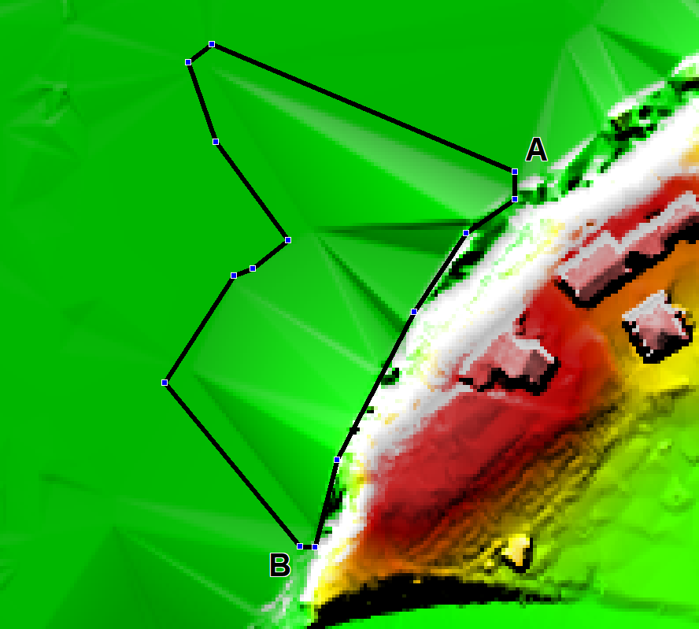
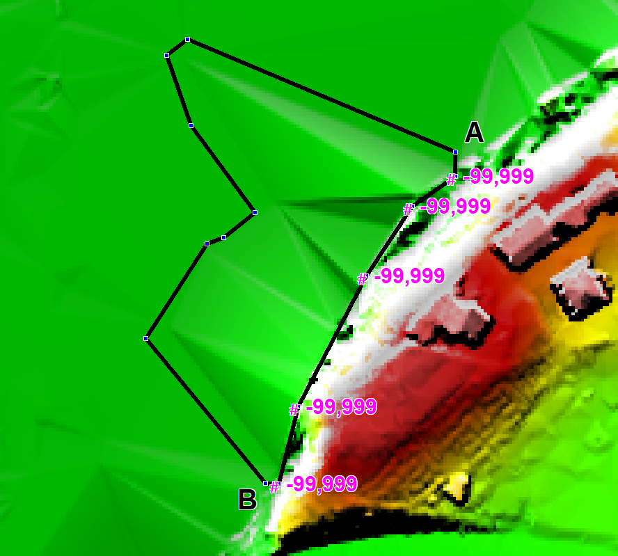
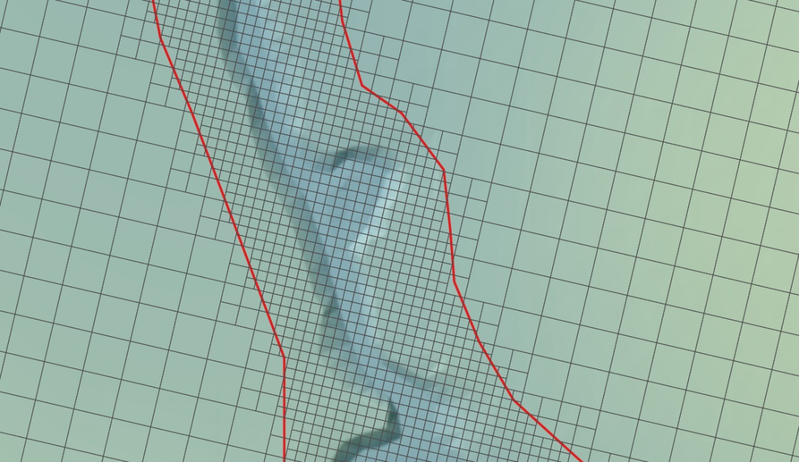

Section 7 2D Domains
7.1 Introduction
This chapter of the Manual discusses features specifically related to 2D model domains. 1D domain features are discussed separately in Chapter 5 and 1D/2D linking is discussed in Chapter 10.
7.2 Solvers
TUFLOW solves the depth averaged 2D Shallow Water Equations (SWE). The SWE are the equations of fluid motion used for modelling long waves such as floods, urban stormwater inundation, dam failure hydraulics, ocean tides and storm surges. They are derived using the assumption of vertically uniform horizontal velocity and negligible vertical acceleration (i.e. a hydrostatic pressure distribution). These assumptions are valid where the wave length is much greater than the depth of water. In the case of the ocean tide, the wavelength is long, and even at the deepest parts of the ocean the SWE are applicable.
The 2D SWE in the horizontal plane are described by the following partial differential equations of mass continuity and momentum conservation in the X and Y directions for an in-plan Cartesian coordinate frame of reference. The equations are:
2D Continuity:
\[\begin{equation} \frac{\partial h}{\partial t} + \frac{\partial(hu)}{\partial x} + \frac{\partial(hv)}{\partial y} = S \tag{7.1} \end{equation}\]
X Momentum:
\[\begin{equation} \frac{\partial (hu)}{\partial t} + \frac{\partial (huu)}{\partial x} + \frac{\partial (hvu)}{\partial y} - \frac{\partial \left( h \nu_t \frac{\partial u}{\partial x} \right)}{\partial x} - \frac{\partial \left( h \nu_t \frac{\partial u}{\partial y} \right)}{\partial y} + gh\frac{\partial (z + h)}{\partial x} + gh\frac{n^2\sqrt{u^2+v^2}}{h^\frac{4}{3}}u = S_u - \frac{h}{\rho}\frac{\partial P_a}{\partial x} - c_f h v + \frac{\tau_{x,wind}}{\rho} \tag{7.2} \end{equation}\]
Y Momentum:
\[\begin{equation} \frac{\partial (hv)}{\partial t} + \frac{\partial (huv)}{\partial x} + \frac{\partial (hvv)}{\partial y} - \frac{\partial \left( h \nu_t \frac{\partial v}{\partial x} \right)}{\partial x} - \frac{\partial \left( h \nu_t \frac{\partial v}{\partial y} \right)}{\partial y} + gh\frac{\partial (z + h)}{\partial y} + gh\frac{n^2\sqrt{u^2+v^2}}{h^\frac{4}{3}}v = S_v - \frac{h}{\rho}\frac{\partial P_a}{\partial y} + c_f h u + \frac{\tau_{y,wind}}{\rho} \tag{7.3} \end{equation}\]
Where:
- \(h\) = Depth of water
- \(u\) and \(v\) = Depth averaged velocity components in X and Y directions
- \(t\) = Time
- \(x\) and \(y\) = Distance in X and Y directions
- \(z\) = Bed elevation
- \(n\) = Manning’s bed friction coefficient
- \(c_f\) = Coriolis force coefficient (available for TUFLOW Classic only)
- \(\nu_t\) = Turbulent kinematic viscosity
- \(P_a\) = Atmospheric pressure
- \(\rho\) = Density of water
- \(S\) = Areal volume source (volume per unit time per unit area), used for rain and infiltration
- \(S_u\) and \(S_v\) = Areal momentum source terms (force per unit area per unit fluid density), used for local energy losses
The terms of the SWE can be attributed to different physical phenomena. These are:
- Propagation of the wave due to gravitational forces.
- Transport of momentum by advection.
- Horizontal diffusion of momentum or sub-grid scale turbulence (see
Section 7.2.4).
- External forces such as bed friction, rotation of the earth, wind, wave radiation stresses, and barometric pressure.
For further discussion relating to the SWE, please see Section 3.4.1.
TUFLOW Classic and TUFLOW HPC use different solution schemes to solve the SWE. Both approaches are discussed in the following Sections.
7.2.1 TUFLOW HPC 2D Solver
TUFLOW HPC is an explicit solver using a finite volume method. It computes the volume flow across cell boundaries. Volume cannot leave one cell without being placed in its neighbour. As a result, 2D volume is conserved and 2D mass error is 0%. The transfer of momentum across cell boundaries is computed in the same way and once external forces are considered (bed slope, bottom friction, and wet perimeters of non-uniform depth) momentum is conserved.
The explicit finite volume scheme applies the conservation of mass over the cell for calculating the rate of change of cell depth. In Figure 7.1, the cell centre (for the cell in question) is given the notation cc, while the surrounding neighbours are given the notation n1..n4. The u velocity at the left and right faces are notated u1 and u2, and the v velocities at the bottom and top faces are notated v3 and v4. The cell width and height are Δx and Δy respectively.
TUFLOW HPC uses an automatic adaptive timestep to achieve unconditional stability, as mentioned in Section 3.5.4. It solves the 2D SWE on a uniform Cartesian grid. Water depth/level is calculated at the cell centres, and velocity components at the cell mid-sides or faces in the same manner as TUFLOW Classic.
Figure 7.1: TUFLOW HPC 2D SWE Finite Volume Scheme Approach
The time rate of change for the cell averaged depth is shown in Equation (7.4).
\[\begin{equation} \frac{A\partial h}{\partial t} = \Phi_{1} - \Phi_{2} + \Phi_{3} - \Phi_{4} + S_{Q} \tag{7.4} \end{equation}\]
Where:
- \(A\) = cell area
- \(h\) = depth
- \(t\) = time
- \(\Phi_{1}\) to \(\Phi_{4}\) = the four face fluxes
- \(S_Q\) = sources (rain and infiltration)
The volume fluxes across the four cell sides and the net volume from source boundaries determine the rate of volume change and the change in depth. Source boundaries include SA, ST and RF boundaries, soil infiltration, evaporation, and any flow linkages to 1D elements via SX links. By computing the face fluxes for all model faces, and referencing these when computing the depth derivative for each cell, volume conservation is guaranteed to numerical precision. At “Head” boundaries, the above equation does not apply. Rather, the defined head (level) is directly used to calculate the water volume and associated depth in the cell.
The calculation of the cell side volume fluxes is available in either 1st or 2nd order spatially. For the 1st order scheme, this uses depth of the upstream cell (often referred to as upwinding), bounded to be greater than or equal to 0, and less than or equal to the surface elevation of the upstream cell less the bed elevation at the cell side mid-point. For the 2nd order scheme the depth at the face is computed as the average of the two cell averaged depths, however, this method in its simplest form is not total variation diminishing (TVD) and is known to be unstable. A hybrid method is implemented in which the depth at the cell face transitions from interpolated depth to the upstream depth (1st order upwinding) when the solution shows short scale reversal or upstream controlled supercritical flow.
The solution of the cell side fluxes includes the inertia and sub-grid scale turbulence (eddy or kinematic turbulent viscosity) term. Turbulence is detailed further in Section 7.2.4. The cell side fluxes may also be factored down by flow constriction factors where sub-grid-scale obstructions exist.
Due to the explicit scheme, the calculation of flux for one cell face may be performed independently of the other faces, and likewise the summation of flux for each cell volume may be performed independently of the other cell volumes. Applying the same algorithm to millions of data elements is well suited to modern multi-core CPUs, and particularly suited to GPU hardware acceleration.
The 1st order approach can experience numerical diffusion, like all 1st order schemes, and does not resolve strongly two-dimensional hydraulics (e.g. flow expansion downstream of a constriction) as well as a 2nd order solution. The 2nd order solution demonstrates no discernible numerical diffusion, and resolves complex 2D hydraulics, including hydraulic jumps as demonstrated using the UK EA Benchmark Flume Test 6A Collecutt & Syme (2017). When running HPC solver the 2nd order spatial scheme is the default and recommended approach.
For further details on the scheme, refer to Collecutt & Syme (2017). Note that at the time this paper was written, the scheme utilised cell centre definitions for velocity, which was prone to a zero-energy ‘checker-board’ mode in the solution. Subsequent to the paper, cell mid-side points were adopted for the definition of u and v velocities which has eliminated the checker-board mode with only very minor changes to the results.
7.2.2 TUFLOW Classic 2D Solver
The scheme is unlike the TUFLOW HPC solution in that it solves the same shallow water equations implicitly using matrices, allowing much larger timesteps (hence why it is important to monitor mass error in implicit schemes such as TUFLOW Classic to check that the solution is converging).
An Alternating Direction Semi-Implicit (ADI) finite difference method is used for TUFLOW Classic’s computational procedure. It was originally based on the work of Stelling (1984). The method involves two stages per timestep, each having two steps, giving four steps overall. Two of the steps sweeps through the model domain solving tri-diagonal matrices, hence the “semi-implicit”. Due to the implicit solution, TUFLOW Classic is not suited to being parallelised for multi-core CPUs or for GPU acceleration.
Step 1 solves the momentum equation in the Y-direction for the Y-velocities. The equation is solved using a predictor/corrector method, which involves two sweeps. For the first sweep, the calculation proceeds column by column in the Y-direction. If the signs of all velocities in the X-direction are the same the second sweep is not necessary, otherwise the calculation is repeated sweeping in the opposite direction.
The second step of Stage 1 solves for the water levels and X-direction velocities by solving the equations of mass continuity and of momentum in the X-direction. Tri-diagonal equations are generated and solved across the 2D domain by substituting the momentum equation into the mass equation and eliminating the X-velocity. The water levels are calculated and back substituted into the momentum equation to calculate the X-velocities. This process is repeated for a recommended two iterations. Testing on a number of models showed there to be little benefit in using more than two iterations unless there are rapid changes in the hydraulic conditions per timestep as may occur with modelling inundation from a dam break.
Stage 2 proceeds in a similar manner to Stage 1 with the first step using the X-direction momentum equation and the second step using the mass equation and the Y-direction momentum equation.
The solution as formulated by Stelling has been enhanced and improved to provide much more robust wetting and drying of elements, upstream controlled flow regimes (e.g. supercritical flow and upstream controlled weir flow), modifications to cells to model structure obverts (e.g. bridge decks) and additional energy losses due to fine-scale features such as bridge piers.
TUFLOW Classic solves the 2D SWE on the same uniform Cartesian grid as used by TUFLOW HPC. Water depth/level is calculated at the cell centres, and velocity components at the cell mid-sides or faces.
7.2.3 Cell Schematisation
TUFLOW 2D models discretise the real world as a grid of connected square cells. A fixed grid 2D domain is defined by a bounding rectangle in the same manner a computer screen or digital photo is made up of a grid of pixels.
The physical properties (i.e. ground elevations, surface roughness, etc) of a 2D cell are defined as a minimum at the cell’s centre, mid-sides and corners as described in Section 7.3.1. High resolution topographic detail for the cell’s storage and conveyance across the cell sides (faces) can be incorporated by using the Sub-Grid Sampling (SGS) feature available in TUFLOW HPC, as documented in Section 7.4.3. SGS has substantial accuracy benefits. It enables the use of much larger cell sizes without loss of hydraulic conveyance accuracy. It also results in less output sensitivity to the grid orientation.
7.2.3.1 Computational Points
To fully understand how TUFLOW functions, understanding of the computational role of the 2D cell and its four sides (also referred to as faces) is important. In the following sections, these model components are referred to as the ZC, ZU, ZV and ZH points, as shown in Figure 7.2. The description of these points are:
- ZC – the cell centre with ZC being the elevation used computationally within the cell.
- ZU – middle of the cell side of the Y-axis face with ZU being the elevation used computationally along the cell side.
- ZV – middle of the cell side of the X-axis face with ZV being the elevation used computationally along the cell side.
- ZH – corner of the cell. The ZH point plays no role in the computational hydraulics but is used for some output formats that require output at the cell corners.
Figure 7.2: Location of Zpts and Computation Points
7.2.3.1.1 ZC Point
The cell centre or ZC point:
- Defines the location where water levels are computed based on mass
balance equation. Simply put, the net volume of water entering (or
leaving) the cell across the four cell sides (or faces) must equal the
change in volume of the cell over a timestep.
- The volume of a cell can either be simply based on the depth of water
multiplied by the cell area or, if Sub-Grid Sampling (SGS) (Section 7.4.3) has been
applied, a curve of volume versus depth.
- The ZC value is typically the elevation at the cell centre or, if
using SGS, elevations are sampled across the cell, as outlined in Section 7.4.3. The ZC value
plus the Cell Wet/Dry Depth is the water
surface elevation that controls when a cell becomes wet or dry (note
that cell sides can also wet and dry).
- The ZC value also determines the bed slope when testing for the upstream controlled flow regime in TUFLOW Classic (see Section 7.5.2) and TUFLOW HPC (Section 7.4.4).
7.2.3.1.2 ZU and ZV Points
The cell sides or faces:
- Control how water is conveyed from one cell to another using the momentum equation, or when upstream controlled flow occurs, the relevant flow equation (eg. weir equation).
- Are deactivated if the whole of the cell has dried based on the ZC
elevation as described above.
- Can wet and dry when the whole cell is wet (see Cell Wet/Dry Depth). This allows for the modelling of “thin” obstructions such as fences and thin embankments relative to the cell size (e.g. a concrete levee).
- Surface roughness information (e.g. Manning’s n) is inspected at the ZU and ZV points. See Bed Resistance Cell Sides
7.2.4 Turbulence
Turbulence within rivers plays a significant role in determining the mean flow velocity field and is integral to the overall energy loss mechanism. During a significant flood event, the majority of the flow is carried within, or near to, the river or open channel system (the primary flow path), and the water levels on the surrounding floodplains are principally determined by the energy losses along this flow path. Manning’s equation is accurate for straight or slowly varying channels but does not calculate energy losses due to sudden changes in flow direction or velocity, and it does not capture super-elevation at bends. To automatically and accurately capture these additional energy losses, a scheme must be physics based with a turbulence closure model. The turbulence closure model must be thoroughly bench-marked against appropriate test cases at a range of resolution scales. It is important that the turbulence closure model is cell size and timestep independent (i.e. the turbulence closure model parameters do not need to be adjusted if cell size or timestep changes). Collecutt et al. (2020) provides benchmarking of the TUFLOW turbulence schemes.
There are three approaches available to model losses associated with turbulence when using TUFLOW HPC, these are discussed in Section 7.4.2. The default scheme for TUFLOW HPC is the Wu approach (Section 7.4.2.4). There are two approaches available to model turbulence when using TUFLOW Classic, these are discussed in Section 7.5.1. The default scheme for TUFLOW Classic is a hybrid approach that includes elements of both the Constant and Smagorinsky approaches (Section 7.5.1.2).
7.2.4.1 Dry Wall Treatment
All of TUFLOW’s viscosity approaches feature an enhanced treatment of the viscosity term at dry boundaries. The enhanced boundary treatment corrects for unrealistic flow separation that would otherwise occur at the wet/dry interface. Figure 7.3 presents a example of a benchmark model test with and without the enhanced boundary treatment. The top image is the result without the enhanced boundary treatment. Non-physical flow separation is observed along the oblique wet/dry boundary.The enhanced approach is shown in the bottom image. It does not suffer from the flow separation, and the velocity increases gradually from left to right as the water depth gradually shallows (the model has a horizontal bed). The correct water surface slope is produced when compared with theory.
All of the viscosity approaches are cell-centred. This guarantees symmetry is achieved in hydraulic results when using a symmetrical model.
The top image in Figure 7.3 shows flow separation along a dry oblique boundary without enhanced treatment of viscosity term. The bottom image shows a correct velocity distribution using enhanced treatment of viscosity term at dry boundaries.

Figure 7.3: Effect of Enhanced Dry Boundary Viscosity Term Treatment
7.3 Common Functionality
The following sections are the same (or mostly so) between TUFLOW HPC and TUFLOW Classic.
7.3.1 Defining the Domain
Each fixed grid 2D domain is treated as a rectangle at any orientation. The orientation and dimensions of each 2D domain are defined using .tgc file commands. For the orientation it is recommended that the X-axis falls between 90° and –90° of East due to some post-processing software only operating within this range.
Several options are available for setting the 2D domains grid location and orientation. The options are:
- Using a four-sided polygon in a GIS layer to define the 2D grid
orientation and dimensions (see Read GIS
Location).
- Using a line (two vertices only) in a 2d_loc GIS layer (attributes shown in Table 7.1) to define the origin (first point of line) and orientation (based on the second point of the line) of the X-axis (see Read GIS Location), and Grid Size (N,M) or Grid Size (X,Y) to set the 2D grid X and Y
dimensions.
- Using Origin, Orientation or Orientation Angle, and Grid Size (N,M) or Grid Size (X,Y). No GIS layers are required for this option. This option is used in Tutorial 1 of the TUFLOW Wiki Tutorials.
- Using a DEM to set the size and location of a 2D domain (see Read Grid Location). This option is useful where the model extent is the same as the DEM.
It is recommended during the initial model build process, to view the _dom_check file to ensure that the model domain is set up as intended.
Note, if using the TUFLOW HPC Quadtree functionality, the 2D domain is set up in the Quadtree Control File (.qcf), see Section 7.4.1.2.
| No | Default GIS Attribute Name | Description | Type |
|---|---|---|---|
| 1 | Comment | Optional field for entering comments. Not used. | Char(250) |
After establishing the domain’s origin, orientation and extent, the .tgc
command Cell Size is used to define the domain’s fixed
grid resolution. For example, the below command in the .tgc sets the cell size to 10m (or 10ft is using
Note, it is not necessary to specify domain dimensions that are an exact multiple of the domain’s Cell Size (e.g. when using the Grid Size (X,Y) command).
Within this computational domain, 2D cells can be set to be active or inactive, as described in Section 7.3.2. The redundant (inactive) areas around the edges of the domain’s bounding rectangle are automatically removed from the computation. However, when allocating memory for processing of the arrays this is still accounted for. To determine the redundant area, search the TUFLOW log file (.tlf) for “redundant”, as shown in Figure 7.4. If the redundant value is large, revising the model domain dimensions will reduce the memory usage during startup.

Figure 7.4: Redundant Perimeter Sections Reported in the TLF
7.3.2 Active / Inactive Cells
Each 2D cell is assigned a code to indicate its role. The available code types are listed in Table 7.2. The default value is one (1) for active (i.e. the cell can be wet or dry during a simulation).
Commands used to modify the cell codes are:
- Set Code in the .tgc file. This option sets the cell codes for the entire domain.
- Read GIS Code in the .tgc file. This option sets the cell codes based on the value in 2d_code input polygons, see Table 7.3.
- Read Grid Code in the .tgc file. This option sets the cell codes based on the values of an input raster grid.
- Read GIS Code BC in the .tgc file. This option sets the cell codes from the 2d_bc input polygon. The Type attribute must be set to “CD” and the code value is taken from the 2d_bc f attribute, see Table 8.6.
Note when using the Read GIS Code command, code values are extracted from objects in a 2d_code layer (see Table 7.3). When using the Read GIS Code BC, code values are extracted from objects in a 2d_bc layer (see Table 8.6). Confusing the two GIS layer types and commands will result in WARNING 2320 message being issued.
A typical approach is to set all the cells to be inactive using
Boundary Cells are automatically set to 2 along external boundaries and links (e.g. HX, HS, HT, QT boundaries). This code value of 2 (see Table 7.2), is output in the TUFLOW grid check file and a value of 2 should not be used in input commands. The _grd_check file can be used to view the active cells (and their code values e.g. 1, 2 or -1) within the domain.
For TUFLOW Classic models containing multiple 2D domains (see Section 10.7.2), a useful option for setting the cell codes is the INVERT flag (see Read GIS Code Invert or Read GIS Code BC Invert), which allows the same code layer/polygons to be used for activate and deactivate regions in multiple 2D domains using a single GIS input.
TUFLOW automatically strips any redundant rows and columns around the active area of the model to reduce simulation times. This is described in Section 7.3.1.
| Type | Code | Description |
|---|---|---|
| Inactive Cells | 0 |
Inactive cells are cells that are totally removed from the computation. Maximising the area of inactive cells reduces computation time and output file sizes. For a fixed grid 2D domain, inactive cells still consume memory during a simulation, as these domains are stored on a row column rectangular grid. For a quadtree grid, inactive cells will consume temporary memory (CPU RAM) during model startup, but do not consume memory (CPU or GPU) during the simulation. |
| Active Cells | 1 | Active cells are cells that can wet and dry during a simulation. |
| Boundary Cells | 2 |
Boundary cells indicate cells that are an external boundary (including some types of 1D/2D dynamic links). There should be an active cell on one side and an inactive or null cell on the other at an external boundary. If an external boundary is digitised inside an active area (i.e. not along the active area boundary), water can flow in both directions either side of the boundary line (only in rare situations would the modeller require this). Note: It is not necessary to manually specify boundary cells. Boundary lines are digitised in GIS layer(s) and TUFLOW automatically assigns the boundary code to the cells (see Section 8.5.1 and Read GIS BC). |
| Null Cells | -1 |
Inactive cells used to deactivate cells within the active domain. Null cells may be preferred to inactive cells as they are not excluded from the output mesh structure (eg. not excluded from the XMDF mesh). For two simulations to be compared in some post-processers (eg. SMS), they must have exactly the same mesh. For example, if an area in a model is removed (e.g. filling part of a floodplain), use null cells or raise the ground elevations in preference to using inactive cells so that the two simulations can be compared. Setting null cells is not supported when using the TUFLOW HPC Quadtree (see Section 7.4.1) functionality. |
| No | Default GIS Attribute Name | Description | Type |
|---|---|---|---|
| 1 | Code | The code value (see Table 7.2) to be assigned to cells falling on or within the object. | Integer |
7.3.3 Data Layering
TUFLOW models are set up using data layering. This is an important, and very useful concept.
Commands are applied in sequential order; therefore, it is possible to override previous information with new data to modify the model in selected areas. For topography modifications, this is extremely useful where a base dataset exists, over which areas need to be modified to represent other scenarios such as a proposed development. This eliminates or minimises data duplication. This concept of layering datasets may also be applied to other GIS , including (but not limited to) 2d_mat, 2d_code and 2d_soil layers. For example, setting all cell codes inactive, then reading in a GIS polygon covering the active cells (as discussed in Section 7.3.2).
Figure 7.5 shows a visual representation of how TUFLOW interprets the following set of .tgc commands:
The command lower in the TGC will take precedence over a command above where data overlaps and the command has the same functional purpose (eg. topography definition).
The DEM_5m layer is read in first. The elevations are then replaced by the overlapping Bathy_1m layer. A 2D Z Shape (2d_zsh_buildings) is then read in which raises all elevations inside the polygon by 5m. The result is shown in the DEM_Z. The DEM_Z is a check file representing the elevation data that TUFLOW has used for the hydraulic calculations. For more information on check files see Section 14.7.

Figure 7.5: Visual Representation of Data Layering in TUFLOW
Data layering is discussed in further detail for elevation updates in Section 7.3.5.
7.3.4 Sampling of Data Sets
To setup the boundary of the 2D grid and assign data values to the cells from DEMs, TINs, land-use polygons, soil polygons and so forth, these data layers need to sampled, interrogated or interpolated. There are two approaches to sampling datasets in TUFLOW:
- Traditional approach (Section 7.3.4.1)
- Sub-Grid Sampling (SGS) approach - recommended (Section 7.4.3)
The traditional approach by 2D solvers is to sample a single value at the 2D cell centre (ZC). TUFLOW also supports sampling values, for some data types, at the centre of each cell side (ZV and ZU) and the corner of the cell (ZH). The cell side sampling for example, enables a cell side to be set to the height of a levee that is narrower in width than the 2D cell. Subsequently controlling when water can move from adjacent cells depending on the water level relative to the levee crest elevation. The traditional sampling approach is explained in Section 7.3.4.1.
As of the 2020-01 TUFLOW release, TUFLOW HPC supports the sampling of elevations at sub-grid locations, referred to as Sub-Grid Sampling (SGS). The TUFLOW Classic solver does not support SGS due to the nature of the implicit solution and preferred use of a fixed timestep. The many benefits of using SGS are detailed in Section 3.3.3, implementing the SGS approach is described in Section 7.4.3.
7.3.4.1 Traditional Sampling Approach
Topographically, the cell is treated as having a flat horizontal bed at a height set to the cell centre (ZC) elevation, and the cell faces as having flat, rectangular shaped sides at a height set to the cell mid-side (ZU and ZV) sampled elevations as illustrated in Figure 7.6. Using the traditional sampling approach, the topography of a cell is treated as follows:
- The cell volume is represented as a square bucket with a flat
horizontal bed, and simply calculated as the cell centre depth times
the cell area.
- The flow area across a cell face used for the momentum and mass
balance equations is simply represented as a rectangular section (i.e.
cell side centre depth times the cell width).
- The bed resistance term in the momentum equation (e.g. Manning’s equation) uses the Resistance Radius approach (i.e. the cell face radius value as used in Manning’s equation is set to the depth and the cell width or cell size is used for the wetted perimeter).

Figure 7.6: 2D Cell Topography - Traditional Approach
7.3.5 Elevations
2D domain elevations are defined in the .tgc file. As mentioned in Section 7.3.3, a powerful feature of TUFLOW is its capacity to build the 2D elevations from any number of GIS layers and/or TINs. The typical approach adopted is as follows:
- All elevations in the model start with an un-initialised value of 99999. TUFLOW will output an error if any elevations of 99999 (or higher) occur after the processing of the elevations. This is to indicate that elevations in active cells have not been initialised or set.
- A default elevation is specified first in the .tgc file using Set Zpt. An inundation free elevation is usually specified. If your elevation data sets are intended to cover your entire active area this step can be omitted so as to trigger the error described above in case elevation data are unintentionally missing (e.g. unintended null areas in a DEM or accidental omission of a layer).
- The elevations read directly from a DEM using Read Grid Zpts, or read from TIN in the SMS, 12D or LandXML TIN formats (see Read TIN Zpts).
- If there are areas where data is either missing or erroneous, these can easily be corrected via interpolation using Read GIS Z Shape regions or polygons. This is achieved by digitising a polygon around the missing or erroneous data. TUFLOW interpolates elevations across the region based on the existing Zpts around the perimeter of the polygon. An example is shown in Section 7.3.5.2. Missing or erroneous data often occurs with aerial surveys where the sampling is in areas of thick vegetation, water or where post processing has poorly filtered the removal of elevated objects (e.g. buildings).
- Sometimes there is a need to remove cut and fill works from the topography. For example, model calibration often requires the removal of infrastructure, such as levees, road embankments and developments that may not have existed at the time of the historic event to back date the topography within the model. This is easily done using Read GIS Z Shape by simply digitising polygons around the various features.
- The base elevations set up in the previous step(s) can be modified
to represent hydraulic controls, proposed works, failure of a flood
defence wall, etc. Some examples are:
- The crests of road/rail embankments, levees, fences and other solid obstructions are easily inserted using Read GIS Z
Line, Read GIS Z Shape or Read GIS Z HX Line.
Read GIS Z Shape is particularly powerful as 3D
lines can be given a thickness making it very easy to quickly raise,
or lower, elevations along a road alignment or a diversion channel
where the width of the embankment/channel is wider than the 2D cell
size.
- The proposed cut and fill for a development or other works can be
incorporated using Read GIS Zpts, Read GIS Z
Shape, Read TIN Zpts or Create
TIN Zpts. These powerful commands can set
elevations based on regions. Within regions TINs can be generated from
points and lines, and the perimeter of the TIN can be automatically
merged with the existing Zpts. A TIN of the cut and fill produced by
SMS or 12D can be read directly into TUFLOW using Read GIS
Zpts.
- The crests of road/rail embankments, levees, fences and other solid obstructions are easily inserted using Read GIS Z
Line, Read GIS Z Shape or Read GIS Z HX Line.
Read GIS Z Shape is particularly powerful as 3D
lines can be given a thickness making it very easy to quickly raise,
or lower, elevations along a road alignment or a diversion channel
where the width of the embankment/channel is wider than the 2D cell
size.
- If there is a need to simulate the failure of a flood defence wall or road/rail embankment, or the collapse of fences, Read GIS Variable Z Shape can be used to control the collapse of the embankment or fences over time. The collapse can be triggered to occur at a specified time, when a water level reached somewhere within the model, or based on the water level difference between two locations.
A 2D domain’s Zpts are built up using one or more of the commands shown in Table 7.4 and discussed in the following sections.
| Command | Description |
|---|---|
| Set Zpt | Sets all Zpts over the whole 2D domain to the same value. Useful for providing an initial elevation prior to other commands as some Zpts in inactive (land) parts of the model may not receive a value. The default value for all Zpts is 99999. Every Zpt must be assigned a value, essentially making this command mandatory. |
| Read Grid Zpts | Directly interrogates a raster grid (e.g. tif, .flt or .asc) to define Zpt elevations. This command is similar to Read TIN Zpts but works on a grid rather than a TIN. |
| Read TIN Zpts | Reading of a TIN to set the Zpt values within the TIN. |
| Read GIS Z Shape |
Powerful command to modify Zpt values using points, lines and polygons. Lines can vary in width from just the cell sides (thin), whole cells (thick) or be assigned a width (thickness). TINs are created within the polygons and incorporate elevations from points and lines that fall within the polygon. The perimeter of the polygon can be merged with the current Zpt values in part, or in its entirety. Read GIS Z Shape and Create TIN Zpts are excellent for removing bad data areas and for filling in null areas where the aerial survey has provided poor or no data. Another example is to remove buildings from a DEM. |
| Read GIS Variable Z Shape | Allows the user to define the eroded 3D shape of a section of the 2D domain, specify the period for collapse, and how the collapse is triggered (i.e. at a specified time or when a water level is reached or when a water level difference is exceeded). Raising of the Zpts over time is also permitted (e.g. to model the influence of flood defences during an event or a landslide filling a river). |
| Create TIN Zpts | Useful for having TUFLOW create a TIN using polygons for TIN boundaries and points and lines within the polygons to create the TIN. If no points are snapped to the perimeter vertices of a polygon, the elevations around the polygon’s perimeter are merged with the current Zpt values. The resulting TIN can optionally be exported to SMS and 12D TIN formats. |
| Read GIS Z Line | This is a legacy feature and it is recommended to use the Z Shape functionality (Section 7.3.5.2) instead. |
| Read GIS Z HX Line | Similar to Read GIS Z Line, but uses HX lines and ZP points in a 2d_bc layer (see Table 8.6) to adjust the 2D cell elevations along HX lines. |
| Read GIS Zpts |
Typically used for simple modifications of sections of the topography. Examples are filling an area (defined by a region or polygon object) to the same elevation or dredging (lowering) a section of river using Read GIS Zpts ADD. Read GIS Z Shape offers greater functionality and may be preferable to using Read GIS Zpts to modify Zpts. |
|
Maximum Points Maximum Vertices |
Use these commands to increase the maximum number of elevation points or maximum number of vertices in a single line or polygon. |
| Default Land Z | Now rarely used in lieu of Set Zpt. |
|
Interpolate ZC Interpolate ZHC Interpolate ZUV Interpolate ZUVC Interpolate ZUVH |
Allows the interpolation of Zpts from other types of Zpts. Now rarely used as nearly all models assign values directly to all the Zpts. The original TUFLOW code only required input of ZH points, and Interpolate ZUVC provided a tool for interpolating the other Zpts. Models with “bumpy” terrain, such as that from airborne laser surveys, might benefit from using Interpolate ZHC or Interpolate ZUV. Models through urban areas where the DTM includes the buildings may benefit from using Interpolate ZC ALL LOWER, which reduces the amount of cells that become blocked out due to high ZC elevations from buildings. |
|
ZC |
Rarely used. Sets the ZC (cell centre elevation) to the lower of the ZU and ZV (cell sides). |
7.3.5.1 Direct Reading of DEM Grids
The use of the .tgc command Read Grid Zpts allows TUFLOW to directly interrogate (point inspect) a DEM to set the Zpt elevations. This command is similar to Read TIN Zpts but works on a grid rather than a TIN.
Grid formats currently supported are:
- GeoTIFF (.tif)
- Geopackage raster (.gpkg)
- Binary grid format (.flt/.hdr)
- ESRI ASCII Grid format (.asc)
Nearly all GIS software will support one of the above grid formats.
The GeoTIFF format is the default output format and preferred input format. It is faster to read and write compared to the .flt and .asc formats, and also supports compression. The format of grids can be converted (e.g. from .flt to .tif), the Raster Format Conversion TUFLOW Wiki page details how to do this.
Like other .tgc commands, the command Read Grid Zpts can be specified multiple times. An option to specify ADD, MIN or MAX in the same way as for other similar commands is also available.
Clip regions can be specified as a second argument in the command Read Grid Zpts (and also Read TIN Zpts) by reading in a GIS layer containing one or more polygons to clip the area of Zpts to be inspected. For example, the command below will only assign elevations to Zpts that lie inside polygons within the 2d_clip_DEM layer:
The attributes of the clip layer are not used, and only polygons are processed. As such, any of the TUFLOW empty files can be used as the template for this layer. Polygons can have holes in them if required.
This is particularly useful for clipping out a TIN or DEM due to unwanted or irregular triangulation around the periphery, especially for secondary TINs/DEMs of proposed developments lying within the primary TIN/DEM.
Note: For your base Zpts from the primary DEM or TIN, do not clip this with your active 2d_code layer as this will cause problems with Zpts along any external 2d_bc boundaries. If no clip layer is specified, the Read Grid Zpts or Read TIN Zpts commands assign all Zpts falling within the Grid / TIN an elevation irrespective of whether a cell is active or inactive.
When reading grids into TUFLOW, the same interpolation approach occurs for all formats. The procedure TUFLOW follows is:
- The DEM elevation is assumed to be in the centre of the DEM grid cell (pixel), as shown by the four red circles in the picture below.
- A midpoint vertex (green circle) is defined in the middle of the four DEM elevations.
- The elevation of the midpoint vertex (green circle) is equal to the average of the four DEM elevations (red circles).
- The DEM grid cell centre points (red circles) and midpoint vertex (green circle) are used to create a TIN.
- Elevations within the TIN are interpolated from the associated TIN points. For example, a Zpt is included in the image below as a yellow point. The elevation assigned to that Zpt is the planar (linear) interpolation of the surrounding three elevation points associated with the top TIN triangle in the image.

7.3.5.2 Z Shape Layers (2d_zsh)
Read GIS Z Shape offers a wide range of options for manipulating and modifying the Zpt values. These include 3D breaklines and TINs. Table 7.5 provides a description of the different 2d_zsh GIS layer attributes.
When a mixture of different shapes and shape options occur within the same layer the following protocols are used to control how Zpt values are modified.
- The order in which objects are processed is:
- Polygons: All polygons are triangulated according to the
process described for Create TIN Zpts in
Section 7.3.5.4. The only difference to note is that if a
line is to be used for the TIN generation, the Shape_Options
attribute for the line must include the keyword “TIN”.
- Wide Lines: Wide lines are lines that have a
Shape_Width_or_dMax attribute value greater than 1.5 times the
2D Cell Size. A buffer polygon is created along
the line, and all Zpts falling within the buffer polygon are
assigned elevations based on a perpendicular intersection with
the line. Note that wide lines are processed in the order that
they occur in the GIS layer, so if the buffer polygons of two
wide lines overlap each other, the latter one prevails. In this
situation it would be wise to separate the two lines into two
different layers. Buffer polygons can be viewed in the
_sh_obj_check layer.
- Thin and Thick Lines: Thin lines have a Shape_Width_or_dMax
value of zero and Thick lines a value less than or equal to 1.5
times the 2D Cell Size. For a more detailed
description of Thin and Thick lines see Read GIS Z
Line. Thin and Thick lines are applied
depending on the Shape_Options attribute setting as follows:
- All ADD lines are applied first.
- Followed by lines without any option (these will modify all
Zpts affected by the line).
- Followed by GULLY, LOWER or MIN lines.
- And finally, any RIDGE, RAISE or MAX lines.
- All ADD lines are applied first.
- Polygons: All polygons are triangulated according to the
process described for Create TIN Zpts in
Section 7.3.5.4. The only difference to note is that if a
line is to be used for the TIN generation, the Shape_Options
attribute for the line must include the keyword “TIN”.
- The priority can of course be further controlled by using different layers and controlling the order which layers are listed and subsequently processed in the .tgc file.
Some examples of using Read GIS Z Shape are given below. Models set up using these topography update features are provided in the Topography Features Example Model Dataset
Example 1: Triangulating Elevations over a Null Area
The image below shows an example of a DEM that is missing data over a small area within the 2D domain. Gaps in DEM coverage can sometimes occur over water bodies and occasionally between the tiles of ALS or LiDAR data received from a third-party provider. An example of using the MERGE topography update feature is provided in the TUFLOW Tutorial Module 2

|
The .tgc command Set Zpt may be used to quickly and easily assign elevations to Zpts falling within these areas, however the limitations of the command mean the same elevation will be assigned to all null Zpts across the entire 2D domain. This may not be suitable in situations where there are multiple gaps in coverage or where the gap is located on steep terrain. Read GIS Z Shape with 2d_zsh polygons may instead be used to triangulate Zpt values based on the Zpt elevations of the polygon perimeter. |

|
Import in an empty 2d_zsh GIS layer, and digitise a polygon around the gap in coverage as shown. Ensure there is a reasonable buffer around the null area. The attributes of the polygon may be left blank. Alternatively, a value may be entered in the “Shape_Width_or_dMax” attribute to control the maximum distance between intermediate points inserted around the polygon’s perimeter to interpolate elevations. When left blank, this distance is half the 2D cell’s size. |

|
This image shows the resulting _DEM_Z.flt check file. The _zsh_zpt_check layer can be used to view the final Zpt elevation assigned |
Example 2: Use of the NO MERGE and ADD Shape Options
The 2d_zsh NO MERGE option can be used to assign a single elevation to all Zpts falling within the 2d_zsh polygon (read by the Read GIS Z Shape command). An example of using the NO MERGE topography update feature is provided in TUFLOW Tutorial Module 2. This may be useful to set the elevation of a polygon to a known finished floor level of a proposed development. Digitise a polygon within an empty 2d_zsh GIS layer, and populate the “Z” attribute of each object with the desired elevation. Set the “Shape_Options” attribute to NO MERGE. The example below will assign an elevation of 42.1mAHD to all Zpts located within the 2d_zsh polygon.

Note that if the NO MERGE option is omitted and no points are snapped to the perimeter of the polygon, the Z attribute will be ignored and the Zpt elevations will be triangulated based on the Zpt elevations of the polygon perimeter.
Alternatively, to raise the polygon by a fixed value (i.e. to represent the slab height of a building) enter this value in the Z attribute and set the “Shape_Options” to ADD. An example of using the ADD topography update feature is also provided in TUFLOW Tutorial Module 2.

TUFLOW will add the value entered in the Z attribute to the existing Zpt elevations within the polygon. The entry within the figure to the left will raise Zpt elevations by 0.15m. The use of a negative value will lower the Zpt elevations by the value of the “Z” attribute. The _zsh_zpt_check layer can be used to view the elevation points (Zpts) that have been modified.
Example 3: Raising an Embankment
The ADD option may also be used when the 2d_zsh object has been digitised as a line. An example of using the ADD topography update feature is provided in TUFLOW Tutorial Module 2. Populate the Z attribute with the amount the embankment is to be raised by. Populate the “Shape_Options” attribute with ADD as shown in the second figure of Example 2 above. This will raise the existing Zpt elevations by the value of the Z attribute. By default, TUFLOW will assume a thin line, and only alter the ZH, ZU and ZV Zpt elevations of a cell. The “Shape_Width_or_dMax” attribute may be optionally specified to represent a THICK or a WIDE line (refer to Section 7.3.5.2).
Alternatively, if a 3D breakline has been digitised, the dZ attribute on the snapped points may be used to raise or lower the embankment. The dZ attribute increases or decreases the elevation of the point’s Z attribute by the amount of dZ. In the example below, a 3D breakline has been created by snapping points to either end of the line. The elevations along the line are determined by a linear interpolation of the Z attribute of the points. Entering a positive dZ value at each point will raise the elevations at the points by the amount of dZ at each point (0.2m for one of the points in the figure below). The elevations along the line are then interpolated based on these revised values. The _zsh_zpt_check layer can be used to view the final Zpt elevation assigned.

Example 4: Removing ridges from a poorly triangulated DEM.

|
The image shows two false ridges indicated by the H letters. These were caused by a poor triangulation by the TIN software used to create the DEM. These ridges caused unrealistic flow patterns, as shown by the velocity vectors. Note, The blue cells at the bottom are the downstream boundary cells. |

|
This image is of the DEM_Z and _zpt_check check file layers from the TUFLOW simulation. This is how TUFLOW interprets the DEM data. The false ridges are clearly shown. |
|  |
To remove the ridges, import an empty 2d_zsh layer, and digitise a polygon around the ridges as shown. By default (i.e. using the default attribute values), the elevations assigned around the perimeter of the polygon are interpolated from the current Zpt values. One problem with this approach is that the elevations along the right-hand side (i.e. along the edge of the floodplain between Locations A and B) are interpolated from the high Zpts along this boundary. |
|  | To solve this problem, digitise points either into the 2d_zsh layer or into a 2d_zsh…_pts layer that snap to the vertices of the polygon where the high elevations occur. Assign a Z attribute of -99999 to each point, as shown in the image. The -99999 indicates to not interpolate an elevation from the existing Zpts. Instead, the elevations at Locations A and B are used to interpolate elevations at vertices where -99999 has been assigned. |

|
Use Read GIS Z Shape to process the polygon and points and generate the TIN as shown in the image. The TIN can be viewed by importing the _sh_obj_check GIS layer. |

|
This image shows the new DEM_Z check file after the above 2d_zsh layer has been applied. As can be seen, the ridges have been removed and the flow patterns are now realistic. |
Example 5: Highway Embankment Removal Example
The figures below present another example where a new highway, which exists in the DEM, needed to be removed because the calibration flood events occurred before the highway was built. Removal of the highway only required the digitising of a 2d_zsh polygon around the highway. All attributes were left as their defaults, and there was no need to specify any elevation points. This example then used an additional Z shape line and point feature to reflect the existing highways topography (using the method discussed in Example 3). Either Read GIS Z Shape or Create TIN Zpts can be used for this purpose.

| No. | Default GIS Attribute Name | Description | Type |
|---|---|---|---|
| 1 | Z |
Point: An elevation of -99999 has a special meaning when the point is snapped to a vertex of a polygon. The -99999 indicates to ignore the elevation at that vertex and of any automatically inserted vertices between that vertex and the two neighbouring vertices. Instead the elevations are based on the elevations of the neighbouring vertices. If a neighbouring vertex also has a -99999 point snapped to it, the next vertex is used, and so on. This feature is very useful, as illustrated in the example above. Line: If the ADD option is specified, the value entered is used to increase (positive ‘Z’ values) or decrease (negative ‘Z’ values) the elevation of the Zpt values by the amount specified (i.e. a value of 0.5 will raise existing Zpt values by 0.5m). Otherwise ignored. Polygon: If the ADD option is specified, the value entered is used to increase (positive ‘Z’ values) or decrease (negative ‘Z’ values) the elevation of the Zpt values by the amount specified. Otherwise ignored. |
Float |
| 2 | dZ |
Point: Line: Not used. Recommend setting to zero. |
Float |
| 3 | Shape_Width_or_dMax |
Point: Not used. Line (no TIN): Line (TIN): Polygon: |
Float |
| 4 | Shape_Options |
Point: Not used. Line or Polygon: MAX, RIDGE or RAISE: Only changes a Zpt elevation if the Z Shape elevation at the Zpt is higher. MIN, GULLY or LOWER: Only changes a Zpt elevation if the Z Shape elevation at the Zpt is lower. Line Only: Polygon Only: MERGE ALL: Ignores elevations from any points snapped to the perimeter and merges all perimeter vertices with the current Zpt values. NO MERGE: Does not merge the perimeter elevations with the current Zpt values. |
Char(20) |
7.3.5.3 Variable Z Shape Layer (2d_vzsh)
TUFLOW 2D model topography can be varied over time to simulate breaching of embankments, raising of flood defences during an event, or the filling of a river due to a landslide, by using Read GIS Variable Z Shape. The 2d_vzsh layer is used to define the final topographic shape at the end of the topography change period. As summary of the GIS layer attributes is provided in Table 7.6. The first four attributes of 2d_vzsh are the same as the 2d_zsh layer. They are used to define the finished state of the variable geometry. Additional attributes have been added to allow the user to define how/when the breach commences and for how long. The breach/fill can be triggered using a number of methods:
- At a specified time (example provided in TUFLOW Tutorial Module 10 - Part 1);
- When the water level reaches a specified height at a specified
(trigger) location (example provided in TUFLOW Tutorial Module 10 - Part 2); or
- When the water level difference between two triggers exceeds a specified amount.
Variable Z Shapes can be restored once or repeatedly. Examples would be a breach of a flood defence wall or levee that is reinstated 6 hours later, or a sand bar of a creek entrance that repeatedly opens and closes. To use the restore feature, two additional attributes Restore_Interval and Restore_Period are required as described below in Table 7.6. For a single restoration event, only these two additional attributes are required. To restore repeatedly, “REPEAT” must be specified in the Shape Options in column 4. Repeated restoration is only possible for the water level and water level difference trigger methods, as a time trigger will not be able to be reached on a second occasion.
Note, this variable geometry feature should be used instead of the 2d_bc VG option (unless the rate of change of the erosion/fill is non-linear) as 2d_vzsh layers are easier to define and manage.
| No. | Default GIS Attribute Name | Description | Type |
|---|---|---|---|
| 1 | Z | Same as for Table 7.5. | Float |
| 2 | dZ |
Same as for Table 7.5. |
Float |
| 3 | Shape_Width_or_dMax | Same as for Table 7.5. | Float |
| 4 | Shape_Options |
Point: TRIGGER or TRIGGER 1D: Indicates the point is not an elevation point, but a trigger location. The trigger must be given a name using the Trigger_1 attribute. TRIGGER 1D is required if a 1D node water level is used to trigger a 2D variable Z-Shape. The trigger point must be snapped to the 1D node or channel end in the 2d_vzsh layer to achieve this. Line or Polygon: Same as for Table 7.5. Except the ADD option is not supported. REPEAT: Specify this option for the variable Z shape to repeatedly function indefinitely based on the below trigger and restore attributes. Thin Line: NO MERGE: For thin lines (Shape_Width_or_dMax = 0), the final elevations along the line are as specified. If NO MERGE is not specified for a thin line, the final elevations are set to be the same as the current Zpt values plus the dZ value. REPEAT: Specify this option for the variable Z shape to repeatedly function indefinitely based on the below trigger and restore attributes. |
Char(20) |
| 5 | Trigger_1 |
Point: If Shape_Options is set to TRIGGER or TRIGGER 1D, enter the name of the trigger location. The name can contain any characters and can include spaces. Otherwise not used. Line or Polygon: To commence the failure at a specified time leave blank. To commence failure based on reaching a water level elsewhere in the model, enter the name of the trigger location. Thin Line: For thin lines there are two special options as follows. Specify DEPTH to have the failure commence once the depth of water adjacent to the cell side exceeds the amount specified for Trigger_Value. Specify DEPTH DIFF to have the failure commence once the difference in water level across the cell side exceeds the amount specified for Trigger_Value. |
Char(20) |
| 6 | Trigger_2 |
Point: Not used. Line or Polygon: The name of a second trigger location (only needed if the breach is to be initiated on a water level difference between two trigger locations). |
Char(20) |
| 7 | Trigger_Value |
Point: Not used. Line or Polygon: If Trigger_1 is blank, the simulation time in hours that the breach is to commence. If Trigger_1 is specified and Trigger_2 is left blank, the water level at Trigger_1 that needs to be reached to trigger the failure. If both Trigger_1 and Trigger_2 are specified, the water level difference between Trigger_1 and Trigger_2 that needs to be exceeded to trigger the failure. The water level difference is taken as the absolute of the difference between Trigger_1 and Trigger_2, so there is no need to specify a negative value. Thin Line: If “DEPTH” is specified for Trigger_1, the depth in metres adjacent to the cell side that needs to be exceeded to trigger the failure at the cell side. If “DEPTH DIFF” is specified for Trigger_1, the water level difference in metres across the cell side that needs to be exceeded to trigger the failure. For all of the above options the length units are metres if modelling in SI units, or feet, if using |
Float |
| 8 | Period |
Point: Not used. Line or Polygon: Time in hours over which the variation in Zpt elevations occurs. |
Float |
| 9 | Restore_Interval |
The time in hours between when the variable Z shape has finished altering the geometry and when to start restoring the Zpts back to their original values. Note: “REPEAT” must be specified in Column 4 to allow repeated triggering and restoration of the Variable Z Shape (for the water level and water level difference options), otherwise restoration will only occur once. |
Float |
| 10 | Restore_Period | Time in hours over which the variation in Zpt elevations occurs to restore the Zpts back to their original values. | Float |
Example 1: Variable Z Shape Example: Breaching of an Embankment
The image below shows an example of a 2d_vzsh layer. The solid magenta line is the polygon, the magenta dashed lines are lines used to enforce TIN breaklines, and the four magenta points all have an elevation of 41.0m. The Shape_Options attribute for the polygon was set to MIN (this means that the Zpt elevation can only be lowered (i.e. eroded), and the dashed lines have Shape_Options of TIN (to indicate that they are to be used for TIN generation, and not for Z lines). The vertices of the polygon that do not have a point snapped to them will be automatically assigned an elevation based on the existing Zpt values. The polygon vertices with the points snapped to them are assigned the elevation of the point (in this case, all at 41.0m). The elevation of the dashed lines will be constant at 41m as they are snapped to the 41m points.
The only other object in the layer is the yellow pin point labelled A. This is a trigger point. Its only attribute values are: TRIGGER for the Shape_Options attribute; and A for the Trigger_1 attribute. This sets the point as a trigger point and the “A” is the name of the trigger point. The magenta polygon also has attribute values of: A for Trigger_1 (this indicates that the erosion trigger is based on the water level at Trigger Location A); a Trigger_Value of 42.0 (i.e. when the water level at location A reaches 42m, start the erosion); and a Period value of 1.0 indicating that the erosion takes one hour to complete.
The final eroded Zpt values are based on the TIN created by TUFLOW (the grey triangles in the image below). The central section will be horizontal at 41m, sloping up either end to elevations based on the road level. The _vzsh_zpt_check layer is useful to view the Zpts affected by the variable Z shape. This layer is also shown in the image below. The green triangles indicate that the Zpt level is to be eroded, and the crosses indicate no change (this is because of the MIN Shape_Options). The final eroded Zpt values are labelled in the image below. Other useful attributes are also available in this layer.
The images below show the modelled breach which occurs using the example above. Each image is in half hour intervals. The colour shading is of the elevations (specify ZH as a Map Output Data Types to view the changes in ground level over time).


7.3.5.4 3D TIN Layers (2d_ztin)
TINs (triangulations) of elevation points and 3D lines within a polygon can be carried out using Create TIN Zpts. This is particularly useful for modifying the Zpt elevations where there have been, or are proposed, changes to the base DEM Zpt values.
Note, for large datasets it is likely to be much more efficient to use GIS or 3D surface modelling software to triangulate the data, and read triangulated data in a supported format (see Read TIN Zpts) or to convert to raster (see Read Grid Zpts).
The protocols applied to the Create TIN Zpts command are:
- A TIN is created for each polygon in the 2d_ztin layer.
- Any points found within a polygon are used when generating the TIN.
- Any lines are converted to points, and those points falling within
the polygon are used for the TIN creation. Lines are converted to
points as follows:
- All vertices (nodes) of the line are converted to points.
- The dMax attribute is used to insert additional vertices between
the line’s vertices. For example, if dMax is set to 10, then
additional intermediate vertices are inserted at least every 10
metres (or feet if using
Units == US Customary ) between the existing vertices where the distance between the existing vertices exceeds this value. If the dMax attribute does not exist or is zero, half the 2D domain’s Cell Size is used as the dMax value.
- If there are any points snapped to the line’s vertices, the
elevations of these points are used to set the elevations at all
the vertices generated along the line. In this way, a 3D
breakline effect can be produced within the TIN. If there are no
points snapped to the line, the line’s Z attribute elevation is
used giving the effect of a horizontal line.
- All vertices (nodes) of the line are converted to points.
- The perimeter of the polygon/TIN can either be merged with the
current Zpt values or have its own values as follows:
- If there are no points snapped to the perimeter of the polygon,
the elevations of the polygon’s perimeter vertices, and of any
automatically inserted vertices, are based on the current Zpt
values (i.e. the Zpt values assigned by any prior commands).
- If there are one or more points snapped to the polygon’s
perimeter vertices, the perimeter is not merged with the Zpt
values, and the elevations of the snapped points are used to
assign elevations to the perimeter vertices and any
automatically inserted vertices.
- The frequency of any automatically inserted points around the perimeter is controlled by the dMax attribute. If the dMax attribute does not exist or is zero, half the 2D domain’s Cell Size is used.
- If there are no points snapped to the perimeter of the polygon,
the elevations of the polygon’s perimeter vertices, and of any
automatically inserted vertices, are based on the current Zpt
values (i.e. the Zpt values assigned by any prior commands).
Models using the Create TIN Zpts functionality are provided in the Static Topography Updates Example Model Dataset on the TUFLOW Wiki.
A useful quality control option of Create TIN Zpts is the WRITE TIN option. If this option is specified, a SMS .tin file is written for each TIN generated, and the triangles are written to the _sh_obj_check layer. This means that the TIN can be cross-checked in SMS, viewed in 3D, and edited and modified if desired. Read TIN Zpts can be used to assign Zpt elevations from the modified SMS TIN.
A second argument to specify a GIS layer containing one or more polygons to clip the area of Zpts to be inspected can be used with the Read TIN Zpts command. Refer to Section 7.3.5.1 for more information.
| No. | Default GIS Attribute Name | Description | Type |
|---|---|---|---|
| 1 | Z |
Point: Elevation of the point. Line: Elevation of the line. Ignored if there are any points snapped to the line’s vertices. Polygon: Not used. |
Float |
| 2 | dMax (optional) |
Point: Not used. Line: Maximum distance between automatically created intermediate vertices. If set to zero or this attribute does not exist, half the 2D domain’s Cell Size is used. If less than zero no intermediate vertices are inserted. Polygon: Same as for Line above. |
Float |
7.3.5.5 3D Breakline Layers (2d_zln)
This is a legacy feature and it is recommended to use the Z Shape functionality (Section 7.3.5.2) instead. For details on this feature see Read GIS Z Line in Appendix C.
7.3.5.6 Zpt Layers (2d_zpt)
This is a legacy feature, to define base elevations it is recommended to use the Read Grid Zpts functionality (Section 7.3.5.1) instead. For details on this legacy feature see Read RowCol Zpts in Appendix C.
Similarly, Read GIS Zpts is also a legacy command. It is recommended to use the Z Shape functionality (Section 7.3.5.2) instead of it.
7.3.5.7 Using Multiple Layers and Points Layers
GIS layers used for Read GIS Z Shape, Read GIS Variable Z Shape, Create TIN Zpts, Read GIS Layered FC Shape, Read GIS Z Line (legacy), Read GIS Z HX Line (legacy) and Read GIS FC Shape (legacy) can be split into more than one layer to better manage the variety of data these commands sometimes require.
For example, one layer may contain the elevation points, another the TIN lines and polygons and another the 3D Z lines. This is useful in terms of managing the data, and especially when interrogating and/or viewing the data in GIS. It is a requirement of the shapefile format that the different geometries (points, lines and regions) are in separate shapefiles. The TUFLOW empty template files include the following filename suffixes to differentiate which files are suitable for point, line or region features.
- _P for point features (e.g. 2d_zsh_M03_002_P.shp)
- _L for line features (e.g. 2d_zsh_M03_002_L.shp)
- _R for region or polygon features (e.g. 2d_zsh_M03_002_R.shp)
This is optional for MapInfo users; the different geometries can occur in the same MapInfo file or can be separated if preferred.
A maximum of nine (9) layers per command line is allowed, and each layer is separated by a vertical bar (“|”). For example, to read a Z Shape layer which has both line and points, the command may be:
If using the GeoPackage format && is also used to specify more than one layer from a common database in the same command line. An example is provided below. See Section 4.4.3 for further details.
7.3.5.7.1 Point Only Layers
To minimise the number of attributes, some/all points may optionally be placed into a separate layer with less attributes as discussed below. This simplifies the datasets making them easier to manage and interrogate.
A layer is treated as a separate points layer if:
- It has less attributes than the minimum required for the command.
For most commands there is only one attribute for the points layer
(i.e. Elevation or Z) as described in Table 7.8. The
exception is Read GIS FC Shape, which
requires the first two attributes. This option requires that the
points layer be defined within the command line syntax. For example:
Read GIS Z Shape == gis\2d_zsh_M03_002_L.shp | gis\2d_zsh_M03_002_P.shp
- The points file uses the same filename as the associated line or
region file with the addition of “_pts” as a suffix to its filename
(for example 2d_zsh_M03_002_pts.shp will be automatically associated
with the line file 2d_zsh_M03_002.shp). This option is supported for
backward compatibility; however, it’s recommended that this option
not be used (it is preferable to enter the filename of the second
layer so that it is clear as to which layers are being used).
Read GIS Z Shape == gis\2d_zsh_M03_002.shp
The data processing logic for points layers is outlined below:
- The specified layer, 2d_zsh_M03_002.shp, is opened. This layer may
or may not contain elevation points. If any elevation points exist
they are used.
- A separate points layer can optionally be used to specify additional
points or all of the points. The layer can be specified in one of
two ways:
- Entering the pathname of the points layer after the main layer.
A “|” must be used to separate the two layers. The points layer
must be the second layer specified. For example:
Read GIS Z Shape == gis\2d_zsh_M03_002_L.shp | gis\2d_zsh_M03_002_P.shp - Alternatively, name the points layer the same as the main layer, but
with a “_pts” extension. If a layer exists with the “_pts”
extension, TUFLOW automatically assumes this layer is associated
with the main layer and includes all points within this layer when
applying the above commands. For this example, the layer would be
named 2d_zsh_M03_002_L_pts.shp.
- Entering the pathname of the points layer after the main layer.
A “|” must be used to separate the two layers. The points layer
must be the second layer specified. For example:
- The first approach (i) above prevails over the second (ii) if both
apply.
- If neither (i) or (ii) apply, TUFLOW assumes there is no separate points layer.
Multiple points layers can be specified. The points layer can be referenced in any location except for the first layer within the command line entry. For example, the below syntax will produce an error due to the points file being the first entry.
Incorrect:
Correct:
| No. | Default GIS Attribute Name | Description | Type |
|---|---|---|---|
| 1 | Z | Elevation (or change in elevation for ADD option) of the point. | Float |
7.3.6 Land Use (Materials)
7.3.6.1 Bed Resistance
The bed resistance values for 2D domains are created by using GIS layer polygons or rasters of different bed resistance zones. The default and recommended bed resistance formulation is Manning’s n. Manning’s n values can be varied with depth (as user specified curve or using the Log Law formula (see Section 7.3.6.3.1)) or varied with velocity-depth product (VxD).
For TUFLOW Classic, bed resistance can also be set to use either Manning’s M values (1/n) or Chezy coefficients using the Bed Resistance Values command in the .tcf file. As this is a TUFLOW Classic feature only, it is further discussed in Section 7.5.3.
The recommended approach is to use materials to define how the bed roughness varies over the model. Each material is defined by a positive integer ID which represents a different roughness category. GIS layers of land-use or vegetation often make excellent material layers. Examples of different material categories are river in-bank, bank vegetation, pasture, maintained grass, roads, buildings, forest, mangroves, etc. Each material is assigned a constant Manning’s n value, depth or VxD varying Manning’s n. The material layer can also be used to set rainfall losses (if using direct rainfall - see Section 8.5.3), fraction impervious, storage area and land-use hazard categories (see Section 7.3.6.3.1).
Material/roughness values are used by TUFLOW during conveyance calculations at the cell mid-sides (refer to Section 7.2 and 7.2.3). However, rainfall losses and fraction impervious are applied to the cell and not cell sides, therefore, materials ID values are sampled at both cell mid-sides and cell centres.
The most common approach is to digitise one or more 2d_mat materials layers (see Table 7.9) and assign Manning’s n values to the materials using Read Materials File. This approach allows the easy adjustment of Manning’s n values, for example during model calibration or sensitivity testing.
When creating the base 2d_mat layer, it is common practice to not digitise the most common or the most difficult to digitise material, and instead use the following data layering of commands in the .tgc file (see Section 4.2.7).
- Use Set Mat to set the most common material to all cells in a 2D domain.
- Use Read GIS Mat or Read Grid Mat to allocate the remaining material values.
The Read GIS Mat and Read Grid Mat commands may be used as many times as required to further modify the materials in parts of a 2D domain. Each subsequent dataset will overwrite the preceding assigned material value, as described in Section 7.3.3.
The default material value is zero. As a material value of zero is not allowed, every cell and cell-side must be assigned a material value using Set Mat, Read GIS Mat and/or Read Grid Mat in the .tgc file (it is good practice to always set a default materials value using the Set Mat as the first material command in the .tgc file). The assigned material ID values do not need to be contiguous but must be within the range 1 to 32,767.
| No. | Default GIS Attribute Name | Description | Type |
|---|---|---|---|
| 1 | Material | The material ID value referenced within a Materials File (see Section 7.3.6.3). | Integer |
7.3.6.2 Log Law Depth Varying Bed Resistance
At very shallow depths the Manning’s n value and/or equation may not be a reliable estimate of bed resistance. The Log Law or “Law of the Wall” approach offers a theoretically based derivation of resistance based on a bed shear analysis. This relationship along with benchmarking against flume test results was used by Boyte (2014) to derive the following equation that varies Manning’s n with depth based on the roughness height of the surface. A limiting Manning’s n value based on the n value that would normally be applied is also specified to transition to conventional n values at greater depths.
\[\begin{equation} n = \max_{}\left\lbrack \frac{\kappa y^{\frac{1}{6}}}{\sqrt{g}\ln\left( \frac{y}{z_{0}e} \right)},n_{limit}\ \right\rbrack \tag{7.5} \end{equation}\]
\[\begin{equation} z_{0} = \ \frac{k_{s}}{30} + \frac{0.11\nu}{U_{f}} \tag{7.6} \end{equation}\]
Where:
- \(k_s\) is the roughness height in m
- \(\kappa\) is typically in the range 0.38 to 0.42 (recommend 0.4)
- \(y\) is depth
- \(\nu\) is the kinematic viscosity and is set to 10-6 m2/s
- \(U_f\) is the friction velocity defined as \(\sqrt{Sgy}\) where \(y\) approximates \(A/P\) and \(S\) is the water surface slope
- \(n_{limit}\) is the limiting n value, ie. the Manning’s n value applicable to greater depths
Figure 7.7 illustrates how the equivalent Manning’s n varies with depth using the log law for a roughness height of 10mm (0.01m) that would be applicable to a small pebble bed. The different series are the variations in the slope, \(S\), where 0.001 is 0.1% slope, 0.02 is 2% slope and 0.1 is a 10% slope. As can be seen there is a significant variation in Manning’s n below 2cm (0.02m) and a trend to a n value of around 0.018, with only a minor variation due to slope.
In terms of applying a limiting n value, if, for example, \(n_{limit}\) was set to 0.02, then the Manning’s n value would not fall below 0.02.
Figure 7.8 shows a comparison using the Log Law versus a constant Manning’s n value (Boyte, 2014). The thesis investigated the use of the Law of the Wall for direct rainfall modelling using TUFLOW. The flow depths in this example range from 4 to 20cm and the roughness height, \(k_s\), was 3cm.
The Log Law Depth Varying Bed Resistance is activated by entering special characters in the 2nd column of the Materials File. See Section 7.3.6.3 and Table 7.10.

Figure 7.7: Example of Log Law Variation of Manning’s n with Depth

Figure 7.8: Example of Log Law versus Constant Manning’s n with Depth
7.3.6.3 Materials File
Materials file(s) contain information on a material’s roughness and, optionally, rainfall losses if using direct rainfall. The file is referenced within the .tcf file using Read Materials File and can be in one of two formats (.csv or .tmf). The .csv format is the recommended of the two options. It supports all functionality. The .tmf format does not. For example, the log law bed resistance option is only available via the .csv format. The .csv format also supports curves of Manning’s n versus depth.
More than one materials file may be specified by repeat occurrences of the command Read Materials File however, most models will use only a single materials file. Any combination of .tmf and .csv files can be used and up to 1,000 materials are allowed in total.
If a second argument is provided with Read Materials File, this value is used to factor all Manning’s n values. For example, the following command increasing all Manning’s n values by 10%:
7.3.6.3.1 .csv Format
The .csv format materials file is a comma delimited text file containing Manning’s n and other information for different materials (e.g. land-uses). The format is intended to be generated from an Excel file database of materials and associated data in a similar manner to BC databases (with the option of using the Excel TUFLOW Macro .xlam macros to export to the .csv format - the Excel TUFLOW Tools.xlam can be downloaded from here). The .csv can also be written from text editor if preferred.
The format of the materials.csv file is described in Table 7.10.
Note: The .csv format offers access to all materials features, whereas the .tmf format does not.
| No. | Description |
|---|---|
| 1 | Mat (Material ID) number, which must be an integer. |
| 2 |
Contains information on the bed resistance values (usually Manning’s n). The options available are:
|
| 3 | Sets the rainfall loss parameters using the initial loss/continuing loss option. The initial/continuing loss is entered as two comma delimited numbers in a similar manner to the third and fourth column values in the .tmf format. See Table 7.11. Refer to Section 7.3.6.4. |
| 4 | Reserved. |
| 5 | Defines the Storage Reduction Factor (SRF) value. If no fifth column entry exists, no SRF is applied. The default is an SRF of 0 (i.e. no change in storage). See Section 7.3.9.1 for more information. |
| 6 | Defines the Fraction Impervious of the overlying material type. The value entered should be a number from 0.0 to 1.0 where 0.0 is fully pervious and 1.0 is fully impervious. The default is a value of 0.0, assuming that the overlying material is 100% pervious. This feature is used to influence the amount of water that is infiltrated into the ground with the soil infiltration feature. Refer to Section 7.3.7 for more information. Note: This option works with the Soli Infiltration feature (see Section 7.3.7). It does not apply to materials rainfall losses (Column No 3 above) when applying direct rainfall (see Section 8.5.3). |
An example of a materials.csv is provided in Figure 7.9. To give a description of the material, this must be done after all inputs for that material and must be preceded by a “!” or “#”.
In the example shown in Figure 7.9:
- Material 1 has a constant n value of 0.03 and no rainfall loss
parameters.
- Material 5 varies n with depth using the four y1,
n1, y2, n2 values (as per .tmf format
approach) and no rainfall loss parameters.
- Materials 11 and 12 use depth vaying n sourced from a file called
Grass.csv. As only one column label has been specified, the y values
must occur under that label and the n values must occur in the next
adjoining column (see Figure 7.10). An IL of 10mm and CL of 2mm/h for both materials will be used for any direct rainfall.
- Materials 21 and 22 use depth vaying n sourced from a file called Trees.csv. As two column labels have been specified, the y and n values must occur under
the specified labels (see 7.10). An IL of 20mm
and CL of 2mm/h for Material 21, and 25 and 2 for Material 22, will be
used.
- Material 31 uses the log law approach (Section 7.3.6.2) with a roughness height of 0.01m, Kappa value of 0.4 and limiting Manning’s n of 0.02. IL = 0mm and CL = 0mm. The fraction impervious value is set to 1.0 (fully impervious).
- Material 32 use depth vaying n sourced from a file called Buildings.csv. In Buildings.csv Column A is used for y values and Column B for n values. IL = 0 and CL = 0. The storage reduction factor is set to 0.3 (30% reduction in storage) and the fraction impervious value is set to 1 (fully impervious).

Figure 7.9: Example of Materials .csv File Format

Figure 7.10: Example of the Grass.csv file read into the Materials.csv

Figure 7.11: Example of the Trees.csv file read into the Materials.csv
7.3.6.3.2 .tmf Format
The .tmf format is a text file containing Manning’s n and other information for different materials (e.g. land-uses). The file can contain comments using the “#” and/or “!” comment characters at any location. When comment characters are specified, the remainder of the line is ignored. The format of the materials .tmf file is described in Table 7.11. The first two columns are mandatory and must be specified. All other columns are optional. A maximum of 100 different materials can be specified in this format.
Note: The .tmf format does not offer all materials functionality, whereas the .csv format in the above section does.
| No. | Description |
|---|---|
| 1 | Mat (Material ID) number, which must be an integer. |
| 2 |
Manning’s n value. Note, if the four values in columns 5 to 8 are specified, the Manning’s n value in this column is ignored and not used. |
| 3 |
Sets the initial loss if using a direct rainfall boundary (via Read GIS RF or Rainfall Control File). Refer to Section 7.3.6.4. This does not apply to Global Rainfall BC. The units are mm, or if |
| 4 |
Sets the continuing loss rate if using a direct rainfall boundary (via Read GIS RF or Rainfall Control File). Refer to Section 7.3.6.4. This does not apply to Global Rainfall BC. The units are mm/hr, or if |
| 5 | y1 – The depth below which the Manning’s n value n1 (column 6) is applied. |
| 6 | n1 –The Manning’s n value applied below depth y1 (column 5). |
| 7 | y2 – The depth above which the Manning’s n value n2 (column 8) is applied. |
| 8 |
n2 –The Manning’s n value applied above depth y2 (column 7). Between y1 and y2, the Manning’s n value is interpolated between n1 and n2 according to Bed Resistance Depth Interpolation. When specifying values for columns 5 to 8, initial and continuing loss values must be specified in columns 3 and 4 as described above (use zero values if not using direct rainfall). |
| 9 | Reserved. |
| 10 | Defines the Storage Reduction Factor (SRF) value. The default is an SRF of 0. Enter 0 to ensure there is no change in 2D cell storage for the material type. See Section 7.3.9.1 for more information. |
| 11 |
Defines the fraction impervious of the overlying material type. The value entered should be a number from 0.0 to 1.0 where 0.0 is fully pervious and 1.0 is fully impervious. The default is a value of 0.0, assuming that the overlying material is 100% pervious. This feature is used to influence the amount of water that is infiltrated into the ground with the soil infiltration feature. Refer to Section 7.3.7 for more information. Note: This option works with the Soli Infiltration feature (see Section 7.3.7). It does not apply to materials rainfall losses (Column No 3 above) when applying direct rainfall (see Section 8.5.3). |
The .tmf file format is shown in the examples below. See Set Mat, Read GIS Mat and Read Grid Mat for assigning the material IDs to the 2D domains. These material values may also be used to define bed resistance values across 1D XZ cross-sections (see Section 5.7.1.1.2).
To include the initial loss (mm) and the continuing loss rate (mm/h) optionally enter a third and fourth value as shown below. If an IL is specified, a CL must also be specified otherwise an ERROR occurs. Both can be omitted, in which case, they are both set to zero.
To vary n values with depth (m) using two pairs of values optionally enter values in the fifth to eighth columns as shown below in lines 2 and 3 (Materials 2 and 11) below. IL and CL values must be entered (use zero if not relevant). If depth varying manning’s n is not used, column 5 to 8 should be left blank, not set to zero.
To reduce the storage of cells, enter a SRF value in the tenth column as shown in line 7 for Material 15 below. The example shown reduces the storage of all cells with Material ID of 15 by 20%. Note that a value of -1 has been entered for the ninth column as this field has been reserved. If not used, specify 0 to ensure no change in storage for the material.
To specify a fraction impervious, enter a value between 0.0 and 1.0 in the eleventh column as shown in line 4 for Material 12 below. The example shown partially restricts the rate of infiltration by applying a fraction impervious of 0.1 or 10%.
7.3.6.4 Rainfall Losses
Rainfall losses applied through the Materials file (.tmf or .csv format) remove the loss depth from the rainfall before it is applied as a boundary on the 2D cells. Rainfall losses are ideal for modelling situations in which water is prevented from reaching the ground, such as through the interception by trees.
Note that the ILCL rainfall losses are different to the ILCL infiltration losses that can be applied using the .tsoilf file (refer to Section 7.3.7.2). The ILCL soil infiltration losses will infiltrate ponded water into the ground. It is possible to use both methods in the same simulation – for example, rainfall that doesn’t reach the ground would be modelled as a material IL/CL (applied as a loss to the rainfall) and infiltration into the ground as IL/CL via soil types. The log file (see Section 14.5.1) will report the material and soil properties separately as shown in the example below:
Example Material Properties:
IL = 1.0mm, CL = 0.0mm/h
Landuse Hazard ID not set.
SRF (Storage Reduction Factor) = 0.
Fraction Impervious = 0.
Example Soil Properties:
HydCond = 117.8 mm/hr
Porosity = 0.417
Initial Moisture = 0.2
Soil Capacity = 0.217
Specifying the “fraction impervious” on the material allows the materials and the soils to be independent (i.e. the same soil can be present under both road and forest). This fraction impervious only applies to the infiltration into the soil, not to the Materials file rainfall losses.
7.3.7 Infiltration
Three methods are available to infiltrate ponded water from the surface into the ground:
- Green-Ampt (GA);
- Horton (HO); and
- Initial Loss/Continuing Loss (ILCL).
When using TUFLOW HPC, it is possible to model multiple vertical groundwater layers, as well as enable horizontal flow of groundwater. As these features are only available in TUFLOW HPC, they are discussed in Section 7.4.5.
All three methods mentioned above monitor the amount of water infiltrated and if the ground becomes saturated, infiltration ceases. The amount of water that can be infiltrated depends on:
- The infiltration approach and soil parameters used for the top most
(infiltration) soil layer.
- The number, thickness, porosities, and initial moisture of the
groundwater layers.
- The fraction impervious value of the overlying material layer.
The cumulative infiltration data is stored and computed at cell centres. As such all soil data and groundwater layer geometry is sampled from the GIS / Grid layers at cell centres. Likewise the material “fraction impervious” data is sampled at cell centres (unlike the Manning’s values which are sampled at face centres).
The following .tgc commands are used to set the ID for the soil type referenced in the TUFLOW soils file (.tsoilf) (Section 7.3.7.2):
- Set Soil;
- Read GIS Soil; and
- Read Grid Soil.
Each of these commands has the option of specifying which soil layer(s) the command applies to. Note that 2D infiltration is activated by the occurrence of one of these commands. If none of the commands exists for a 2D domain, soil infiltration does not occur for that domain.
If soils are specified, the soil ID for each cell are written to the _grd_check layer. The .tlf file contains the parameters for each Soil ID.
7.3.7.1 Infiltration Layer
Only wet 2D cells can infiltrate water into the ground. If using soil infiltration with a single groundwater layer, the default groundwater depth is infinite. The depth (thickness) of the groundwater layer can be set globally using the following commands:
They can also be set spatially with the following GIS and Grid commands:
- Read GIS Soil Thickness
- Read GIS Soil Base Elevation
- Read Grid Soil Thickness
- Read Grid Soil Base Elevation
The soil thickness sets the layer depth from the surface elevation. The soil base elevation sets the absolute elevation of the bottom of the layer. If both methods are specified for a given grid cell, the highest of the two will be adopted. The input units should be in metres or feet. To set an initial groundwater level within the soil layer, see Section 8.9.2.
In releases prior to 2023-03, the groundwater level (or depth) was set to represent a water table. For backward compatibility, it is still possible to the set a water table, using these commands:
The amount of water that enters the soil is also dependent on the fraction impervious value of the overlying material layer. The default is that the overlying material is 100% pervious (i.e. 0% impervious). However, if, for example, a concrete parking lot overlies a sandy soil, the imperviousness of the parking lot can be specified as 100% (i.e. totally), or 90% (i.e. partially) restrict the rate of infiltration. This is described in the materials file in Section 7.3.6.
If using TUFLOW HPC’s SGS functionality (Section 7.4.3), cells can be considered “partially wet”. This necessitated options for factoring down the rate of infiltration into the topmost groundwater layer, the methods are discussed in Section 7.4.3.1.2.
7.3.7.1.1 Green-Ampt (GA)
The Green-Ampt approach varies the rate of infiltration over time based on the soil’s hydraulic conductivity, suction, porosity and initial moisture content. The method assumes that as water begins to infiltrate into the soil, a line develops differentiating between the “dry” soil (with moisture content\(\ \theta_{i}\)) and the “wet” soil (with moisture content equal to the porosity of the soil η). As the infiltrated water continues to move through the soil profile in a vertical direction, the soil moisture changes instantly from the initial content to a saturated state. This concept is presented in Figure 7.12.
![Green-Ampt Model Concept[^2]](images/image109a.png)
Figure 7.12: Green-Ampt Model Concept3
The basic form of the Green-Ampt equation is expressed as follows:
\[\begin{equation} f(t) = K\left( 1 + \ \frac{\mathrm{\Delta}\theta\left( \varphi + h_{0} \right)}{F(t)} \right) \tag{7.7} \end{equation}\]
Where:
- \(t\) = time
- \(K\) = saturated hydraulic conductivity
- \(\mathrm{\Delta}\theta\) = defined as the soil capacity (the difference between the saturated and initial moisture content)
- \(\varphi\) = soil suction head
- \(h_{0}\) = depth of ponded water
- \(F(t)\) = cumulative infiltration calculated from:
\[F(t) - \ \mathrm{\Delta}\theta\left( \varphi + h_{0} \right)\ln\left( 1\ + \ \frac{F(t)}{\mathrm{\Delta}\theta\left( \varphi + h_{0} \right)} \right) = Kt\]
The TUFLOW Wiki provides a detail description of the various Green-Ampt parameters, including how each influences the soil infiltration behaviour.
United States Department of Agriculture (USDA) soil types have been hardwired into TUFLOW and are presented in Table 7.12, along with the soil parameters. Alternatively, it is possible to define a customised soil type by specifying user defined values as shown in Table 7.13.
| USDA Soil Type | Suction (mm) | Suction (inches) | Hydraulic Conductivity (mm/hr) | Hydraulic Conductivity (in/hr) | Porosity (Fraction) |
|---|---|---|---|---|---|
| Clay | 316.3 | 12.453 | 0.3 | 0.012 | 0.385 |
| Silty Clay | 292.2 | 11.504 | 0.5 | 0.020 | 0.423 |
| Sandy Clay | 239.0 | 9.409 | 0.6 | 0.024 | 0.321 |
| Clay Loam | 208.8 | 8.220 | 1.0 | 0.039 | 0.309 |
| Silty Clay Loam | 273.0 | 10.748 | 1.0 | 0.039 | 0.432 |
| Sandy Clay Loam | 218.5 | 8.602 | 1.5 | 0.059 | 0.330 |
| Silt Loam | 166.8 | 6.567 | 3.4 | 0.134 | 0.486 |
| Loam | 88.9 | 3.500 | 7.6 | 0.299 | 0.434 |
| Sandy Loam | 110.1 | 4.335 | 10.9 | 0.429 | 0.412 |
| Loamy Sand | 61.3 | 2.413 | 29.9 | 1.177 | 0.401 |
| Sand | 49.5 | 1.949 | 117.8 | 4.638 | 0.417 |
The 2023-03 release introduces a slight change to the soil moisture
initialisation which impacts the computation of the Green-Ampt
infiltration rate. In previous TUFLOW releases, the initial moisture was
used to revise the soil porosity downwards, and the cumulative
infiltration was initialised to zero. In the 2023-03 release the soil
porosity is not modified, and the cumulative infiltration is initialised
as the lesser of the initial moisture fraction and the soil porosity,
times the thickness of the layer. These two approaches produce slightly
different results for the infiltration rate with the Green-Ampt method.
The new approach is perhaps more logical, and was necessary for the
purpose of initialising to a groundwater table. If the previous approach
is required, and the model has only one soil layer and no horizontal
advection, then it can be selected by using the
7.3.7.1.2 Horton (HO)
The Horton approach to infiltration uses the following equation:
\[\begin{equation} {f = f}_{c} + \left( f_{0} - f_{c} \right)e^{- kt} \tag{7.8} \end{equation}\]
Where:
- \(f_0\) is the initial infiltration rate in mm/hr or inches/hr (if using
Units == US Customary )
- \(f_c\) is the final (indefinite) infiltration rate
- \(t\) is time in hours (period of time that the cell is wet)
- \(k\) is the Horton decay rate.
If an initial loss (IL) is specified, the initial loss is applied first, followed by the Horton infiltration. Figure 7.13 shows an example of how the infiltration rate varies over time for \(f_0\) equal to 3, \(f_c\) equal to 1 and \(k\) equal to 0.1.

Figure 7.13: Example of Horton Infiltration Rate over Time
7.3.7.1.3 Initial Loss/Continuing Loss (ILCL)
The Initial Loss/Continuing Loss (IL/CL) method is a more simplistic approach compared to the Green-Ampt and Horton infiltration methods. The IL/CL method infiltrates water based on an initial volume (at any rate) then transitions to a constant rate after the initial loss volume is exceeded.
Note that the IL/CL infiltration is separate to the IL/CL materials values used to generate excess rainfall for direct rainfall simulations (refer to Section 7.3.6.4 for further information).
7.3.7.2 Soils File (.tsoilf)
Soils infiltration is applied to the model by defining a soils (.tsoilf) file, which is read into the .tcf using the Read Soils File command. Table 7.13 presents the parameters of the .tsoilf file and Figure 7.14 shows an example of a completed file. A number of example models demonstrating the various soil options are available on the TUFLOW Wiki - Soil Options. The soils (.tsoilf) file is similar to the materials file where you assign a positive integer ID to each soil, define the infiltration method (options are “NONE”, “GA”, “HO” and “ILCL”) followed by the soil parameters as the remaining values. The Porosity (saturated moisture content), Initial Moisture (fraction of the soil that is initially wet), Max Ponding Depth and Horizontal Hydraulic Conductivity are all optional with default values of 1.0, 0.0, 0.0 and 0.0 respectively.
Note: Table 7.13 does not include the additional attributes (in regards to horizontal advection) and soil type (convection) available when using TUFLOW HPC. For groundwater modelling including horizontal and vertical subsurface fluid movement, refer to Table 7.21 instead.
| Column No. | No Intriltration | Green-Ampt | Green-Ampt | Horton | Initial/Continuing Loss |
|---|---|---|---|---|---|
| 1 | Soil ID | Soil ID | Soil ID | Soil ID | Soil ID |
| 2 | NONE | GA | GA | HO | ILCL |
| 3 |
USDA Soil Type (see Table 7.12) |
Suction (mm or in) |
Initial Loss (mm or inches) |
Initial Loss (mm or inches) |
|
| 4 |
Initial Moisture (Fraction) |
Hydraulic Conductivity (mm/h or in/h) |
Initial Loss Rate (\(f_0\)) (mm/h or in/h) |
Continuing Loss (mm/h or in/h) |
|
| 5 |
Max Ponding Depth (m or ft) |
Porosity (Fraction) |
Final Loss Rate (\(f_c\)) (mm/h or in/h) |
Porosity (Fraction) |
|
| 6 |
Initial Moisture (Fraction) |
Exponential Decay Rate (k) (h-1) |
Initial Moisture (Fraction) |
||
| 7 |
Max Ponding Depth (m or ft) |
Porosity (Fraction) |
|||
| 8 |
Initial Moisture (Fraction) |
Note for the Green-Ampt method:
- the initial moisture and porosity values in Table 7.13 above are fractions. The soil capacity is defined as the difference between the saturated moisture content (porosity) and the initial moisture content, hence the initial moisture should not exceed the porosity otherwise the soil capacity is set to zero and no infiltration will occur for that soil type. A WARNING 2508 is issued if this occurs.
- the max ponding depth value is an optional value that can be used, if desired, to set a limit for the depth of ponded water (\(h_0\)) value used in the Green-Ampt equation (7.7). The minimum of the water depth and the max ponding depth value is used as the \(h_0\) value. The default max ponding depth value is 0, to be consistent with the basic form of the Green-Ampt equation, as hydrology models do not necessarily have a depth calculated at cells.

Figure 7.14: Example Soils .tsoilf File Format
One or more soils need to be specified globally and/or via GIS layers/raster grids to activate the infiltration feature. The first attribute of the GIS layer/s must be the Soil ID referenced within the .tsoilf file, in the same way that a 2d_mat layer references a Material ID stored within the materials .tmf or .csv file.
| No. | Default GIS Attribute Name | Description | Type |
|---|---|---|---|
| 1 | Soil | The soil ID value referenced within a Soils File (see Table 7.13). | Integer |
Each soil type can have a different infiltration method and infiltration parameters assigned to it, including a no infiltration option, as shown in Table 7.13. Other parameters that can optionally be set are:
- The imperviousness of the surface (see Fraction Impervious parameter
within the materials definition in Table 7.11 or Table 7.10); and
- Groundwater or impervious level beneath the ground surface (refer to Section 8.9.2).
The current limit to the number of soils types is 1,000 for TUFLOW classic simulations and 255 for TUFLOW HPC simulations.
7.3.8 Hydraulic Structures
7.3.8.1 Introduction
Bridges, box culverts and other structures that constrict flow can be modelled in 2D directly, rather than using 1D elements, provided the flow width of the structure is of a similar or larger size than the 2D cell size. Cells are modified in their height (invert and obvert) and width. For bridges, additional losses associated with piers and flow reaching the underside of the deck are specified. For box culverts, the additional resistance for vertical walls is specified. Additional form losses (energy head losses) can be specified for all flow constrictions.
Weir flow (across levees and other embankments) is modelled in 2D domains by default, this is handled differently between TUFLOW Classic and TUFLOW HPC. Refer to Sections 7.5.2 and 7.4.4 respectively.
Modelling hydraulic structures in 2D domains must be carried out with a good understanding of the limitations of different approaches and the different flow regimes possible. The modeller must understand why and where the energy losses occur when assigning form losses to a 2D cell or contraction and expansion losses to a 1D element (Syme, 2001b).
It is important to note that contraction and expansion losses associated with structures are modelled differently in 1D and 2D schemes. 1D schemes rely on applying form loss coefficients, as they cannot simulate the horizontal or vertical changes in velocity direction and speed. 2D schemes model these horizontal changes and, therefore, do not require the introduction of form losses to the same extent as that required for 1D schemes. 2D schemes still however require the introduction of additional form losses since they do not model losses in the vertical or fine-scale horizontal effects (such as around a bridge pier). See Syme (2001b) for further details.
The following webinars by Bill Syme and Greg Collecutt (two TUFLOW Developers) discuss the theory behind the energy losses and affluxes modelling associated with hydraulic structures.
Additionally, the 2D Hydralic Structures Wiki Page contains information regarding 2D hydraulic structures, including theory, setup and Frequently Asked Questions (FAQs).
It is recommended that the losses through a structure be validated through:
- Calibration to recorded information (if available).
- Cross-checked using desktop calculations based on theory and/or standard publications (e.g. “Hydraulics of Bridge Waterways” (Bradley, 1978) or “Guide to Bridge Technology Part 8, Hydraulic Design of Waterway Structures” (Austroads, 2018).
- Crosschecked with results using other hydraulic software.
To validate structure flows and energy losses:
- Specify time-series output (PO) lines of flow (Q_) and flow area (QA)
across the structure (see Section 11.3.2). Upstream and
downstream water levels may also be specified using PO points or
extracted from the map (e.g. XMDF) output.
- Using the upstream and downstream water levels, determine whether flow
is upstream or downstream controlled and estimate the flow using
theoretical equations or other methods.
- Using publications such as “Hydraulics of Bridge Waterways”
(Bradley, 1978) or “Guide to Bridge Technology Part 8, Hydraulic
Design of Waterway Structures” (Austroads, 2018), determine the energy
loss coefficient and compare this with the total energy loss
calculated in the model. The total energy loss is given below.
Clearly, any energy losses associated with bed resistance (e.g.
Manning’s equation) need to be allowed for by subtracting this term
from the calculated head difference \({(h}_{1} - h_{2})\).
\[\zeta_{total} = {(h}_{1} - h_{2})\frac{2g}{V^{2}}\]
Where:- \(\zeta_{total}\) = total energy loss
- \(h_{1}\) = upstream head
- \(h_{2}\) = downstream head
- \(V\) = depth and width averaged velocity (i.e. \(\frac{Q\_}{QA}\))
- \(\zeta_{total}\) = total energy loss
Table 7.15 lists the recommended approaches for modelling 1D and 2D structures using TUFLOW. This is discussed further in the following paragraphs.
| Structure | 1D Approach | 2D Approach |
|---|---|---|
|
Box Culvert (For culverts with a steep slope, use a 1D element) |
OK | OK |
| Circular Culvert | OK | N/A |
| Bridge | OK | OK |
| Weirs | OK | OK |
1D Approach
1D structures are discussed in Section 5.8. 1D modelling is the preferred approach where the total structure width is less than one or two 2D cells. Entry and/or exit losses are defined for each structure. Testing has shown that these losses may need to be reduced where the structure width is significant compared with the cell size (Syme, 2001b).
1D structures can be linked to the 2D domain using either an SX or HX connection, as outlined in (see Section 10.2). The influence of these connection types on the modelled flow behaviour is shown in Figure 7.17.
SX Link: Momentum is not transferred into or out of the 1D element to/from the 2D domain. “Suppressed” flow patterns in the 2D domain occur at the structure outlet when using 1D elements, especially if the structure width is significant compared with the cell size. The water tends to spread, rather than jet out, as there is no inertia across the link. The effect of this is illustrated in Figure 7.16, which shows the effect on flow patterns and the preservation of inertia across 1D/2D links when modelling a structure. Figure 7.16 (red velocity arrows) is that using SX links, whilst Figure 7.15 (green arrows) is that using a fully 2D solution. As can be seen, using a SX link the water tends to spread from the structure outlet, as opposed to forming a jet as in the fully 2D solution which is conserving momentum. When using the SX link, a jet like effect can be created using “wing walls” in the 2D domain at the structure outlet by assigning flood free elevations to the ZU and ZV Zpts either side of where the 1D element discharges into the 2D domain.
HX Link: Momentum is not transferred into or out of the 1D element to/from the 2D domain, however the velocity field across the HX link is assumed to be undisturbed. Provided the HX link is appropriately located (i.e. perpendicular to the flow field) this produces the effect of preserving momentum, as illustrated by the dark blue arrows (Figure 7.17). Use of HX links at a structure may require a smaller 1D timestep than that required by a SX link.
2D Approach
2D representation of structures is preferred where the total structure width is greater than one or two 2D cells. The flow area must be adequately represented by the 2D Zpts and any adjustments to cell widths (see Section 7.3.8.3 and 7.3.8.2. The head drop across the structure during different flow regimes should be validated against other methods and/or literature. Some additional form losses are normally required to achieve correct head drop (see Syme (2001b)). Momentum is transferred through the structure as shown in the top image (green arrows) in Figure 7.15, providing more realistic flow patterns than using a 1D element with a SX link, as illustrated by the middle image (red arrows) in Figure 7.16.

Figure 7.15: Flow patterns using 2D FC cells (i.e. a fully 2D solution)

Figure 7.16: Flow patterns using a 1D element connected to 2D SX links

Figure 7.17: Flow patterns using a 1D element connected to 2D HX links
7.3.8.2 2D Bridge Structures (2d_bg)
Modelling bridge structures in the 2D domain is possible using the BG Shape input layer (2d_bg). The 2d_bg layer facilitates the modelling of bridge structures based on research on energy losses (Collecutt et al., 2022). This method is similar to the Layered Flow Constrictions (described below in Section 7.3.8.3), however, some key updates have been made. The layers in a 2d_bg are called the “pier layer” and the “super structure layer”, which consists of the “deck layer” and the “rail layer”.
Bridges can be defined as either a line or polygon GIS feature using the .tgc command Read GIS BG Shape. The layer attribute description is provided in Figure 7.18 and Table 7.16.
Points can be used to spatially vary the bridge soffit, deck depth and rail depth, with the BG Shape points input layer (2d_bg_pts). The layer attribute description is provided in Table 7.17. This can be used to model an arch bridge or sloping deck. The point objects can be placed in a separate layer to the line or polygon GIS features.
The 2d_bg layer adjusts the FLC value in the vertical as follows:
\[\zeta_{total} = \left( \zeta_{pier} + \zeta_{SuperS}\frac{y_{SuperS}}{D_{IP}} \right)\frac{(y_{pier} + y_{SuperS})}{y_{total}}\]
Where:
- \(\zeta_{pier}\) = FLC of the pier layer.
- \(\zeta_{SuperS}\) = FLC to the superstructure layer.
- \(y_{SuperS}\) = depth of water in the superstructure layer (cannot exceed
- \(D_{IP}\)).
- \(D_{IP}\) = depth to the inflection point from the bridge soffit.
- \(y_{pier}\) = depth of water in the pier layer (cannot exceed
- \(D_{pier}\)).
- \(D_{pier}\) = depth of the pier layer, i.e. from the bed elevation to the bridge soffit.
- \(\zeta_{total}\) = overall form loss coefficient applied
The vertical distribution of the form loss coefficient has the following characteristics:
- Water level below the deck layer: The same result as the 2d_lfcsh
approaches, i.e. a constant form loss based on that specified for the
pier layer (\(\zeta_{pier}\)) is applied.
- Water level between the deck soffit and the inflection point: The FLC
value is linearly increased from \(\zeta_{pier}\) to
\(\zeta_{pier} + \zeta_{SuperS}\). The observations from the CFD and the
field measurement indicate the inflection point is located around 1.6
times the bridge deck depth above the bridge soffit. The “Inflection
Depth” (\(D_{IP}\)) is assumed as:
\[D_{IP} = {IPf}_{SuperS}\left( D_{deck}\phi_{Deck} + D_{Rail}\phi_{Rail} \right)\]
Where:- \({IPf}_{SuperS}\) = A factor to set the elevation of the inflection point
(IP).
- \(D_{deck}\) = depth of the bridg deck layer.
- \(\phi_{Deck}\) = blockage of the deck layer.
- \(D_{Rail}\) = depth of the rail layer.
- \(\phi_{Rail}\) = blockage of the rail layer.
- \({IPf}_{SuperS}\) = A factor to set the elevation of the inflection point
(IP).
- Note that the effect of partial blockage at the rail layer is
considered by adding the rail layer depth (\(D_{Rail}\)) to the
inflection depth proportionally based on the rail layer blockage
(\(\phi_{Deck}\)).
- Above the inflection point the FLC gradually reduces with increasing depth (in a similar manner to the 2D Layered Flow Constrictions METHOD B and METHOD C approaches). This is to simulate the transition to drowned flow and tendency to zero energy losses with increasing depth over the bridge deck.
Figure 7.18: 2D BG Shape Attributes and Vertical Distribution of Form Loss Coefficient
The 2023-03-AD build implemented three extra approaches to adjust the FLC value between in the deck soffit and the inflection point:
- LINEAR: the default option introduced above. The depth averaged FLC value is linearly increased from the bottom of the bridge deck to the inflection point. After the inflection point it gradually reduces.
- LINEAR-CONSTANT: the depth averaged FLC is linearly increased from the bottom of the bridge deck to the top of the bridge deck. Between the top of the bridge deck and the inflection point, the FLC is kept constant. After the inflection point it gradually reduces.
- PARABOLIC: the depth averaged FLC is increased using a parabolic function from the bottom of the bridge deck to the inflection point. After the inflection point it gradually reduces.
- INVERTED-PARABOLIC: the depth averaged FLC is increased using an inverted parabolic function from the bottom of the bridge deck to the inflection point. After the inflection point it gradually reduces.
This approach can be changed for individual BG structure using the Options attribute (see Table 7.16). The vertical profiles of the depth averaged FLC values applied by the four methods are illustrated in the figure below:
Figure 7.19: Depth Averaged FLC Applied Using Four Adjustment Approaches
Other key features of the BG layer that are different from the Layered Flow Constriction are:
- The BG layer does not apply geometry updates. This not only offers
simplicity, but also is a desirable option considering that the size
of TIN polygons used to modify the bridge bed elevations are often
different from the size of polygon used to select BG cell faces.
- For a line layer a “Deck_Width” value of zero sets the layer as a thin
line. It selects one row of faces in the direction of flow, and the
FLC value is applied to the faces unchanged. A “Deck_Width” value
larger than zero sets the layer as a thick line that selects a whole
cell, i.e. two faces in the direction of flow. The FLC values at the
faces are divided by two. The wide line feature is not supported by
the BG layer. BG polygon shapes are recommended if more than 3 rows of
faces must be selected.
- For a polygon layer, the “Deck_Width” defines the bridge width in the
predominant direction of flow. This value is used to distribute the
total FLC value to the selected faces, i.e.:
\[\zeta_{face} = \zeta_{total} \times Deck\_Width \times Cell Size \] This means users no longer need to convert the FLC value to “form loss per metre”, which is required by the Layered Flow Constrictions polygons.
The overall blockage of the face is calculated using the same method as the Layered Flow Constriction:
\[\phi_{total} = \frac{{(y}_{pier}\phi_{pier} + y_{deck}\phi_{deck} + y_{rail}\phi_{rail})}{y_{total}}\]
Where:
- \(\phi_{n}\) = layer n blockage.
- \(y_{n}\) = layer n water depth (set to zero if dry and cannot exceed
depth of layer).
- \(\phi_{total}\) = overall cell face blockage applied.
The FLC value applies an energy loss across 2D cell faces as:
\[\mathrm{\Delta}h = \zeta_{total}\frac{V^{2}}{2g}\]
where \(V\) is the 2D cell face velocity in the presence of the blockage. When setting the blockage values, considerations need to be taken into account whether the source of the FLC value is based on the approach velocity (the velocity in the absence of piers blockage) or structure velocity (the velocity with area blocked out by the piers). For example, Hydraulics of Bridge Waterways (Bradley, 1978) or Guide to Bridge Technology (Austroads, 2018) derives FLC value based on the cross-sectional averaged velocity in the absence of piers, and thus it is recommended to set the Layer 1 blockage value as zero (0). For more information, please see the 2D Hydraulic Structures TUFLOW Wiki page.
| No. | Default GIS Attribute Name | Description | Type |
|---|---|---|---|
| 1 | ID | Unique identifier up to 32 characters in length. It may contain any character except for quotes and commas, and cannot be blank. As a general rule, spaces and special characters (e.g. “\”) should be avoided, although they are accepted. The same ID can be used for a channel and a node, but no two nodes and no two channels can have the same ID. | Char(32) |
| 2 | Options | This attribute can be used to overwrite the global setting specified with the .tcf command BG FLC Default Approach to change FLC calulation method individually. | Char(32) |
| 3 | Pier_pBlockage |
The percentage blockage of the pier Layer. For example, enter ‘5’ for a blockage of 5%. Note: there is no need to apply a blockage value if the FLC is estimated based on the approach velocity (the velocity in the absence of piers). For more discussion, please see the TUFLOW Wiki page on the 2D Hydraulic Structures. |
Float |
| 4 | Pier_FLC | Pier layer form loss coefficient. | Float |
| 5 | Deck_Soffit | The elevation of the bridge soffit (m or ft). | Float |
| 6 | Deck_Depth | The thickness of the bridge deck (m or ft). | Float |
| 7 | Deck_Width |
Line: If equal to zero, sets the layer as a thin line and selects one row of faces in the direction of flow. The FLC value is applied to the faces unchanged. If larger than zero, sets the layer as a thick line that selects a whole cell, i.e. two faces in the direction of flow. The FLC values at the faces are divided by two. Polygon: Defines the bridge width in the predominant direction of flow (m or ft). This value is used to distribute the total FLC value to the selected faces. |
Float |
| 8 | Deck_pBlockage | The percentage blockage of the deck layer. Enter ‘100’ for a solid bridge deck obstruction. | Float |
| 9 | Rail_Depth | The depth of the rail layer (m or ft). | Float |
| 10 | Rail_pBlockage | The percentage blockage of the rail layer. | Float |
| 11 | SuperS_FLC | The combined form loss coefficient for the deck and the rail layers. Two layers are treated as a single “super structure” layer in this new bridge method. | Float |
| 12 | SuperS_Ipf | A factor to set the elevation of the inflection point (IP) at which the transition from pressure flow to drowned flow commences. The default value is 1.6. | Char(64) |
| 13 | Cf | A calibration factor used to adjust the automatically generated FLC (default = 1.0). | Float |
| No. | Default GIS Attribute Name | Description | Type |
|---|---|---|---|
| 1 | Deck_Soffit | The elevation of the bridge soffit (m or ft). | Float |
| 2 | Deck_Depth | The thickness of the bridge deck (m or ft). | Float |
| 3 | Rail_Depth | The depth of the rail layer (m or ft). | Float |
7.3.8.2.1 Automatic Generation of Superstructure FLC
The 2023-03-AD build implemented a feature to automatically generate the superstructure FLC value based on the CFD benchmarking study (Collecutt et al., 2022) if the SuperS_FLC attribute is left blank.
- NONE: The default approach, i.e. the superstructure FLC must be specified manually.
- METHOD A: The blank superstructure FLC values will be calculated based on the ratio of the depth of the pier layer (\(D_{Pier}\) in the equations above) and the thickness of the super structure layer:
\[T_{SuperS} = D_{Deck}{Blockage}_{Deck} + D_{Rail}{Blockage}_{Rail}\]
- METHOD B: The blank superstructure FLC values will be calculated based on the ratio of the depth of the pier layer (\(D_{Pier}\)) and the thickness of the deck layer:
\[T_{SuperS} = D_{Deck}{Blockage}_{Deck}\]
With Method A and B, the superstructure FLC value is linearly interpolated within the \(D_{Pier}\)/\(T_{SuperS}\) range of 1~10 and capped at 0.6 and 0.16 outside this range, as shown in the Figure 7.20.
A calibration factor specified by the 2d_bg ‘Cf’ attribute is applied as a multiplier to the automatically generated superstructure FLC (Cf = 1 if not specified).
Figure 7.20: CFD benchmarking study of FLC vs \(D_{Pier}\)/\(T_{SuperS}\) ratio (\(h_{B}\)/\(T\) in the original paper)
7.3.8.3 Layered Flow Constrictions (2d_lfcsh Layers)
Layered flow constrictions allow losses and blockages to be varied with water depth. This provides the opportunity to model the flow under and over a bridge deck, or a pipeline crossing a waterway.
Note: The 2023-03-AA release introduced the 2d_bg layer, see 2D Bridge Structures. It is recommended that it be used for representation of bridges. Prior to this, bridges were commonly modelled using a 2d_lfcsh.
Four vertical layers within a layered flow constriction (not GIS layers) are represented. The lower three layers each have their own attributes. Each layer is assigned its own percentage blockage and form loss coefficient. The top (fourth) layer assumes the flow in Layer 4 is unimpeded. Within the same shape, the invert of the bed, and thickness of each layer can vary in 3D.
For example, the layers of a bridge structure could be defined as follows.
- Layer 1: Beneath the bridge deck. Might be 5% blocked due to the
bridge piers and have a small form loss for the energy losses
associated with the piers.
- Layer 2: The bridge deck. This would be 100% blocked and the form
loss coefficient would increase due to the additional energy losses
associated with flow surcharging the deck.
- Layer 3: The bridge rails. These might be anything from 100%
blocked (solid concrete rails) to 10% blocked (very open rails). Some
form losses would be specified depending on the type of rails.
- Layer 4: Flow over the top of the rails - flow is assumed to be unimpeded.
Layered flow constrictions function by adjusting the flow width of the 2D cell so as to represent the combination of blockages of the four layers. When the flow is only within Layer 1, only the attributes of Layer 1 are applied. As the water level rises into Layer 2, the influence of the Layer 2 attributes increase as the water continues to rise. Similarly, for Layer 3 and Layer 4.
The cell side flow width is calculated by summing the flow areas of each layer (including the effects of layer blockages) and dividing by the water depth.
As of the 2020-10 release three options are available to specify the method in which form losses are applied:
- METHOD A (CUMULATE in releases prior to 2020-10): Accumulates losses through each of the layers in the 2d_lfcsh as the depth of water increases.
- METHOD B (PORTION in releases prior to 2020-10) – the default: Proportions the losses through each of the layers in the 2d_lfcsh based on the depth of water. - METHOD C: Combines the METHOD A and METHOD B approaches by utilising METHOD A through to the top of Layer 3 and METHOD B above Layer 3.
The following .tcf command can be used to set the default method to be applied to all structures in the model:
To specify the method on a structure by structure basis, populate the Shape_Options attribute (refer to Table 7.18) with either “Method A”, “Method B” (the default) or “Method C”.
Whilst the default approach of using METHOD B is unchanged for backward compatibility purposes, it is recommended the new approaches of METHOD C or the TUFLOW HPC’s 2d_bg layer approach be considered as they are shown to emulate behaviour from CFD modelling more closely for pressurised flow conditions (Collecutt et al., 2022).
Detailed explanation outlining how the losses are applied is provided in the following sections.
METHOD A
If the form loss method has been set to METHOD A (CUMULATE), the losses are accumulated as the water level rises through the layers according to the following equation. This approach was replaced as the default setting for the 2016-03 release due to it producing inconsistent results where the bridge is substantially overtopped (drowned out) with a large percentage of the flow occurring through Layer 4, and the overall energy loss reducing with increasing water depth once the structure is submerged.
\[\zeta_{total} = \zeta_{1} + \zeta_{2}\frac{y_{2}}{D_{2}} + \zeta_{3}\frac{y_{3}}{D_{3}}\]
Where:
- \(\zeta_{n}\) = layer n FLC
- \(D_{n}\) = depth of layer n
- \(y_{n}\) = layer n water depth (set to zero if dry and cannot exceed depth of layer)
- \(\zeta_{total}\) = overall form loss coefficient applied
METHOD B
If the form loss method has been set to METHOD B (PORTION), the losses are applied pro-rata according to the depth of water in each layer using the equation below. Note that Layer 4 (e.g. above the bridge deck rails) is always assumed to contribute a zero FLC. If a layer is not flooded the depth for that layer, yn, is set to zero.
\[\zeta_{total} = \frac{{(y}_{1}\zeta_{1} + y_{2}\zeta_{2} + y_{3}\zeta_{3})}{y_{total}}\]
\[y_{total} = y_{1} + y_{2} + y_{3} + y_{4}\]
Where:
- \(\zeta_{n}\) = layer n FLC
- \(y_{n}\) = layer n water depth (set to zero if dry and cannot exceed depth of layer)
- \(\zeta_{total}\) = overall form loss coefficient applied
METHOD C
METHOD C effectively combines the METHOD A (CUMULATE) and METHOD B (PORTION) approaches by utilising METHOD A through to the top of Layer 3 and METHOD B above Layer 3. METHOD C adjusts the FLC value in the vertical as follows.
- Water level below Layer 2: The same result as for all other
approaches (i.e. a form loss based on that specified for Layer 1 is
applied). This is typically used for the energy losses associated with
bridge piers.
- Water level below top of Layer 3: Same approach as for METHOD A.
- Water level above Layer 3: Gradually reduces the energy loss with
increasing depth by proportioning with depth. The energy loss is
calculated as that accumulated from Layers 1 to 3 pro-rated by the
depth of Layers 1 to 3, plus no losses pro-rated by the depth above
the Layer 3.
\[\zeta_{total} = \left( \zeta_{1} + \zeta_{2}\frac{y_{2}}{D_{2}} + \zeta_{3}\frac{y_{3}}{D_{3}} \right)\frac{{(y}_{1} + y_{2} + y_{3})}{y_{total}}\]
\[y_{total} = y_{1} + y_{2} + y_{3} + y_{4}\]
Where:- \(\zeta_{n}\) = layer n FLC
- \(y_{n}\) = layer n water depth (set to zero if dry and cannot exceed depth of layer)
- \(\zeta_{total}\) = overall form loss coefficient applied
- \(D_{n}\) = layer n thickness
- \(\zeta_{n}\) = layer n FLC
Regardless of the FLC approach, the FLC value applies an energy loss across 2D cell faces as:
\[\mathrm{\Delta}h = \zeta_{total}\frac{V^{2}}{2g}\]
where V is the 2D cell face velocity in the presence of the blockage. When setting the blockage values, considerations need to be taken into account whether the source of the FLC value is based on the approach velocity (the velocity in the absence of piers blockage) or structure velocity (the velocity with area blocked out by the piers). For example, Hydraulics of Bridge Waterways (Bradley, 1978) or Guide to Bridge Technology (Austroads, 2018) derives FLC values based on the cross-sectional averaged velocity in the absence of piers, and thus it is recommended to set the Layer 1 blockage value as zero (0). For more information, please see the 2D Hydraulic Structures TUFLOW Wiki page.
Layered FC shapes are defined as either a line or polygon GIS objects using the .tgc command Read GIS Layered FC Shape. The file attribute description is provided in Table 7.18.
Points can be used to vary the invert of the bed, and thickness of each layer in 3D. In this case, four attributes are required as outlined in Table 7.19. This can for example be used to model an arched bridge or sloping deck. The point objects can be placed in a separate layer to the line or polygon GIS features.
Please note, overlapping flow constriction inputs is not supported.
| No. | Default GIS Attribute Name | Description | Type |
|---|---|---|---|
| 1 | Invert |
Performs same function as described for the Z attribute in Table 7.5 and is applied to the Invert elevation values. To leave the Zpt levels unchanged (i.e. use the existing Zpt elevations), enter a value of 99999. Point or Line: |
Float |
| 2 | dZ | Performs same function as described for dZ in Table 7.5 and is applied to the Invert elevation values. | Float |
| 3 | Shape_Width_or_dMax | Same as for the same attribute in Table 7.5. | Float |
| 4 | Shape_Options |
Point: Not used. Line or Polygon: ADD: Add the shape’s ‘Z’ attribute value to the current Zpts. If ADD is specified, any automatic merging around the region perimeter is ignored. MAX, RIDGE or RAISE: Only changes a Zpt (Invert) elevation if the Z Shape elevation at the Zpt is higher. MIN, GULLY or LOWER: Only changes a Zpt (Invert) elevation if the Z Shape elevation at the Zpt is lower. METHOD A (CUMULATE in releases prior to 2020-10): Accumulates losses through each of the layers in the 2d_lfcsh as the depth of water increases. This will overwrite the global setting specified with the .tcf command Layered FLC Default Approach. METHOD B (PORTION in releases prior to 2020-10): Proportions the losses through each of the layers in the 2d_lfcsh based on the depth of water. This will overwrite the global setting specified with the .tcf command Layered FLC Default Approach. METHOD C: Combines the METHOD A and METHOD B approaches by utilising METHOD A through to the top of Layer 3 and METHOD B above Layer 3. This will overwrite the global setting specified with the .tcf command Layered FLC Default Approach. Line: NO MERGE: For thin lines (Shape_Width_or_dMax = 0), the final elevations along the line are as specified. If NO MERGE is not specified for a thin line, the final elevations are set to be the same as the current Zpt values plus the dZ value. TIN: Indicates the line is to only be used for generation of TINs within polygons (only sections of TIN lines that fall within polygons are used). Polygon: If none of the options below are specified, the Invert elevations at perimeter vertices that do not have an elevation point snapped to them are merged with the current Zpt values (provided Invert does not equal 99999). MERGE ALL: Ignores invert elevations from any points snapped to the perimeter and merges all perimeter vertices with the current Zpt values. NO MERGE: Does not merge the perimeter elevations with the current Zpt values. |
Char(20) |
| 5 | L1_Obvert | The obvert (soffit) of Layer 1. | Float |
| 6 | L1_pBlockage | The percentage blockage of Layer 1. For example, enter 5 for a blockage of 5%. | Float |
| 7 | L1_FLC |
Layer 1 form loss coefficient. Used for modelling fine-scale “micro” contraction/expansion losses not picked up by the change in the 2D domain’s velocity patterns (e.g. bridge pier losses, vena-contracta losses, 3rd (vertical) dimension etc.). This parameter should be used as a calibration parameter. Note: So that this attribute is independent of 2D cell size it has different treatment depending on the object it is attached to as follows:
However, if a negative FLC value is specified, the absolute value is taken and applied unadjusted to all cell-sides affected by the shape. The form loss coefficient is applied as an energy loss based on the dynamic head equation below where \(\displaystyle \zeta_{a}\) is the FLC vlaue. \[\Delta h = \zeta_{a}\:\frac{V^2}{2g}\] |
Float |
| 8 | L2_Depth |
The depth of Layer 2. Depth units are in metres, or feet if using |
Float |
| 9 | L2_pBlockage | The percentage blockage of Layer 2. For example, enter 100 for a solid obstruction such as a bridge deck or pipe. | Float |
| 10 | L2_FLC | Layer 2 form loss coefficient. See notes for L1_FLC | Float |
| 11 | L3_Depth |
The depth of Layer 3. Depth units are in metres, or feet if using |
Float |
| 12 | L3_pBlockage | The percentage blockage of Layer 3. | Float |
| 13 | L3_FLC | Layer 3 form loss coefficient. See notes for L1_FLC | Float |
| 14 | Notes | Optional field for entering comments. Not used. | Char(40) |
| No. | Default GIS Attribute Name | Description | Type |
|---|---|---|---|
| 1 | Invert |
Invert of constriction (metres above datum, or feet above datum if using |
Float |
| 2 | L1_Obvert | The obvert (soffit) of Layer 1. | Float |
| 3 | L2_Depth |
The depth of Layer 2. Depth units are in metres, or feet if using |
Float |
| 4 | L3_Depth |
The depth of Layer 3. Depth units are in metres, or feet if using |
Float |
7.3.9 Cell Modification
7.3.9.1 Storage Reduction (2d_srf)
The storage of 2D cells may be reduced (e.g. to model hypothetical filling, or reduced storage from buildings), or increased (e.g. for stability). For example, if a cell has a Storage Reduction Factor (SRF) value of 0.1, then its storage (surface area) is reduced by 10%. If the SRF value is less than zero, the storage is increased. The default SRF value is zero (i.e. no change in storage).
SRF values are assigned to cells in one or both of the following ways:
- Using the Set SRF and Read GIS SRF .tgc commands. The 2d_srf layer has only one attribute, a float or real value nominally called SRF.
- Assigned to materials .csv/.tmf files as the 5th and
10th column values respectively (refer to Table 7.10 and Table 7.11).
- Using the .tgc command Read Grid SRF to assign SRF values from a raster input grid.
- Via SX connections to 1D. The default approach increases the storage in the 2D cells by the average associated 1D node storage. Refer to Section 10.2.2 and .tcf command SX Storage Approach.
The applied SRF value is reported in the SRF attribute of the _grd_check layer.
Note that a user can apply a combination of material SRF values and Read GIS SRF layers. The item that is used by the simulation depends on the order of commands in the .tgc file. The last read input takes precedence. For example, if a cell’s storage is adjusted by layers read in using both the Read GIS SRF and Read GIS Mat commands, thoughRead GIS Mat is lower in the .tgc file, it will prevail.
If a large reduction in cell storage is applied, for stability reasons it may be necessary to also reduce the cell conveyance using a higher roughness or cell flow width (see Section 7.3.9.2). For example, if a 10m cell size model has a SRF value of 0.99, without any SRF the cell area is 100m2 (10m x 10m), with a SRF of 0.99 this would be reduced to 1m2. If no reduction in conveyance for flow entering or leaving the cell is made, a significant volume of flow may enter the cell between timesteps, this would cause the water level in the cell to jump a large amount, potentially leading to oscillations in water levels.
7.3.9.2 Cell Width Factor (CWF)
The .tgc commands Set CWF, Read GIS CWF and Read Grid CWF can be used to adjust the 2D cell flow widths (in the same manner as for 2D flow constrictions (refer to Section 7.3.8.3). The CWF is a factor, for example 0.1 will limit the flow width to 10%. The changed flow width applies to all depths. When reading from a polygon object in GIS format, any cell sides that fall within the polygon will have the width factor applied. These factors can be reviewed within the uvpt_check file.
7.3.9.3 Form Loss Coefficient (FLC)
Form loss coefficients can be applied in the .tgc to add an additional energy loss at the 2D cell side (in the same manner as for 2D flow constrictions, see Section 7.3.8.3 and 7.3.8.2). Unlike flow constrictions, the FLC applied using this approach does not vary with depth. The form or energy loss can be applied as fixed values with the .tgc commands Set FLC, Read GIS FLC and Read Grid FLC or on a form loss per unit length basis with the .tgc commands Set FLC/L, Read GIS FLC/L and Read Grid FLC/L. The advantage to applying the FLC on a per unit length basis is that it makes these inputs independent of the 2D cell size when using regions (polygons). As such, if the 2D cell size is changed, the same energy loss will be applied to both models over the area of the region.
Any cell sides that fall within the polygon will have the additional form loss These loss can be reviewed within the uvpt_check file.
Section 7.3.8 provides a detailed discussion about the application of additional form losses.
7.3.9.4 Modify Conveyance
The. tgc command Read GIS Zpts Modify Conveyance can be used to modify the elevation of a series of cells based on an increase or decrease in conveyance. Three inputs are required for this operation. These are:
- A GIS layer containing a region / polygon object within which the
modification will apply;
- A conveyance multiplication factor; and
- A water level grid.
The command syntax is:
The terrain levels are adjusted based on the depth of water relative to the water surface provided. The elevations are modified by \(depth\left( 1 - f^{\frac{3}{5}} \right)\), which is effectively a change in conveyance of \(K\times f\) where \(K\) is conveyance and \(f\) is the multiplication factor. For example, f = 1.2 would be a 20% increase in conveyance resulting in a deepening of the waterway. The specified base water level grid is a grid surface in a supported input raster format. The grid does not need to be in the same resolution as the 2D domains, but is typically the _h_Max grid output by TUFLOW from a previous simulation (see Section 11.2.2.2).
This feature is useful for sensitivity testing the changes in flood behaviour due to a deepening or accretion of a river’s bed based on a change in conveyance.
This command would normally be applied in the .tgc, after all elevation (Zpt) commands as the Zpt adjustment is based on the Zpt elevations processed up until the location of this command in the .tgc file. An example is provided below:
Where:
- 2d_mod_river.shp contains polygons of the areas to be modified, in
this case along the river. This can be in any supported vector format (.gpkg, .shp or .mif).
- 0.9 is the factor change in conveyance compared to a base case (i.e.
10% decrease in conveyance).
- base_h_Max.tif is a raster grid of the peak water level grid from a base case simulation. It is recommended to copy this grid layer from the results folder and place it somewhere under model\grid\. If this grid layer varies with AEP, it is recommended to use the one .tcf with a Variable to define the AEP, or alternatively a Scenario variable.
7.3.10 Modelling Urban Areas
The modelling of urbanised floodplains presents many more challenges to hydraulic modellers than those of rural floodplains. It requires careful consideration of the representation of buildings, walls and fences to accurately replicate the overland flow routes. With the advancement of modern computing hardware and software, 2D solutions are increasingly being used over 1D solutions to represent urban areas.
This section of the manual discusses the various methods available in TUFLOW to represent the features within an urban area. It does not aim to identify the most appropriate method, however, discusses the pros and cons to provide the modeller with guidance on selecting the most suitable method for their study.
Syme (2008) explores modelling approaches for buildings and fences, it can be found along with other publications in the TUFLOW Library.
7.3.10.1 Buildings
A number of methods can be used for representing buildings in a TUFLOW 2D model. These are:
- Utilising a higher bed resistance (roughness);
- Raising the elevation of 2D cells where buildings exist;
- Deactivating the 2D cells (code = 0) where buildings exist;
- Reducing the cell storage;
- Restricting the flow using a cell width reduction or additional form loss; or
- Applying a breakline along the upstream faces of buildings.
Utilising a high bed resistance parameter for buildings is a commonly used method to encourage the development of preferential flow paths around buildings during urban flooding scenarios. This method is commonly used and preferred over others as it accounts for the storage that the building provides once it becomes inundated (Syme, 2008). Depth varying roughness is recommended if using this approach in combination with direct rainfall modelling. A low roughness value is recommended at shallow depths, representing the rapid run-off response associated with rainfall on building roofs. High bed roughness is recommended for deeper flows when the building structure impedes overland flow. The application of depth varying roughness is described in Section 7.3.6.
Buildings may also be “removed” from the 2D domain by categorising the buildings as “Land” cells (see Section 7.3.2) or raising the Zpt elevations above the predicted flood level (see Section 7.3.5.2). This method may be appropriate when the building/s have been designed to not flood. In this case, care should be taken to ensure the chosen cell size is able to appropriately represent the area of the building and therefore the storage ‘removed’ from the floodplain. Representing buildings in this fashion will not take into account any below ground storage, such as that provided by underground car parks or basement properties. If using a direct rainfall approach (rain on grid), this method is most likely not suitable. Any land (inactive) cells will have no rainfall applied, meaning the flow volume will be incorrect, artificially high cells (e.g. 10m above ground levels) may cause stability issues as flows exit the building.
Flood studies often require the simulation of extreme flood events, where a great number of buildings are expected to become inundated. It may not be appropriate in these cases to “remove” the building entirely from the 2D domain. A more suitable approach may be to raise the Zpt elevations (see Section 7.3.5.2) of the building polygons to match the finished floor level, thereby specifying the elevation at which the building is able to flood. This may allow for direct rainfall simulations using a modification of the cell elevations.
The use of a thin breakline around the edges of the building can be used to prevent the building becoming a flow path, whilst not removing the storage volume (see Section 7.3.5.2). For example, three sides of the building could be blocked, this will still allow water to enter the building but not flow through it.
Layered flow constrictions (see Section 7.3.8.3) or Cell Width Factor (see Section 7.3.9.2) may be used to impede the flow of water as it passes through the building. The sides of 2D cells may be partially blocked to represent obstructions such as internal or external walls. Additionally, a form loss can be applied using form loss coefficients (see Section 7.3.9.3).
A storage reduction factor can also be used to reduce the area in the cell available for water using the SRF options (see Section 7.3.9.1). This can be used in conjunction with the other methods, for example, a building may have the storage reduced by 20% by applying a SRF of 0.2, this could be combined with a Cell Width Factor of 0.8 (20% reduction in flow area through the building).
In the absence of guidelines in the literature it is recommend that the approaches for modelling buildings be sensitivity tested or calibrated, if possible.
7.3.10.2 Roads
Roads typically represent the main flow routes through urban areas. The chosen cell size of the 2D domain is a key factor in ensuring an appropriate number of cells have been used to represent the width of the roads, as previously discussed in Section 3.3.2. Choosing too coarse a resolution may result in the roads not being accurately represented and minor flow routes not being represented at all. An unnecessarily fine resolution may translate to excessively long simulation times and stability problems if the Courant condition is exceeded. Ideally, it is recommended that the main flow routes be represented with a width of approximately 3-4 cells across. Note, when using the TUFLOW HPC SGS functionality (see Section 7.4.3) identification of locations where a breakline should be used to represent a flow control crest may be important. The SGS Breakline Detection Delta tool (see Section 7.4.3.1.2) can assist modellers in identifying where breaklines may need to be added.
For overland flood studies where a high proportion of sheet flow is predicted, differentiation between the road and pavement elevations may influence the predicted areas of inundation. A DTM based on LiDAR or ALS data, may not necessarily pick up this detail, therefore requiring manual modification of the topography using breaklines.
It is possible to apply the Log Law rule for very shallow flow through automatically varying Manning’s n. This is of particularly interest for modelling flow over smooth surfaces such as roads and concrete (see Section 7.3.6.2).
7.3.10.3 Fences and Walls
Fences and walls can cause significant blockages during a flood event, influencing the direction that flood waters take. Walls act to deflect the path of flood waters and if overtopped, may act as weirs. Fences may partially impede the flow of water and can be prone to becoming blocked with debris. There is also the potential for both walls and fences to collapse during a flood event.
Fences and walls are typically included within a TUFLOW model by digitising a series of breaklines. The 2d_zsh GIS layer permits the width of the breakline to be specified (see Section 7.3.5.2). A “thin” line modifying only the ZU and ZV (cell side) elevations may be preferred to represent fences, in situations where the width of the cell size is notably greater than the width of the obstruction. A “thin” line does not modify the ZC (cell centre) elevations hence has no impact on the cell storage. A “thick” line on the other hand, modifies the ZU, ZV and ZC Zpt elevations and may be more appropriate to represent wider obstructions such as railway embankments.
The 2d_vzsh GIS layer (see Section 7.3.5.3) may be used to represent an embankment that collapses during the simulation. The breach may be triggered at a specified time, by the water level at a defined location or the water level difference between two locations exceeding a specified amount.
7.4 TUFLOW HPC Specific
This section describes 2D domain functionality that is unique to TUFLOW HPC.
7.4.1 Quadtree
Quadtree grid refinement functionality enables the user to vary the 2D cell resolution within a TUFLOW HPC model. Quadtree refinement allows for recursive division of square TUFLOW cells into four smaller square cells. Up to 9 levels of cell size refinement are permitted. All cells for all levels of refinement share a common orientation. Bill Syme, one of the TUFLOW author’s, discusses the benefits and implementation of Quadtree within the Future of 2D Hydraulic Modelling AWS Video. The How to Implement Quadtree video also useful. An example quadtree mesh is presented in Figure 7.21.
Figure 7.21: TUFLOW HPC Quadtree Grid
The Quadtree solver uses a modified version of the HPC solver. It uses an explicit finite volume solution that is 2nd order in space and 4th order in time, however there are some subtle differences between the HPC single grid and Quadtree solvers that mean they produce near identical, though not identical results if both run are over the same single grid (same cell size) grid – see Section 3.2.4 for further discussion.
TUFLOW Wiki Tutorial Module 7 provides a demonstration of quadtree. The followings Sections outline how to use the feature.
7.4.1.1 Quadtree .tcf Commands
To use a Quadtree grid, the solution scheme should be set to HPC and a Quadtree Control file specified using the command Quadtree Control File. GPU Hardware is also recommended. For example:
Note, the keyword “Single Level” can be used instead of a control file (e.g.
“
The Quadtree Control File (.qcf) is described in the next section.
7.4.1.2 Quadtree Control File (.qcf) – Mandatory Commands
The Quadtree Control File (.qcf) is used to define the grid refinement areas and optionally the model location and extent for a Quadtree grid. Appendix H lists and describes the available .qcf commands.
The following commands are mandatory in a .qcf file.
If set to “AUTO” the extents of the Level 1 GIS polygon are used to define the model origin and extents. If set to “TGC”, the model is located as per the commands in the .tgc file. Note, the angle of the model is defined in the .qcf file using the Orientation Angle command below. Also, if set to “AUTO” the GIS nesting polygons must have a Level 1 polygon defined, otherwise an ERROR is generated.
The Read GIS Nesting command can be used to define polygons of grid refinement (different levels) in the 2d_qnl format file, as described in Section 7.4.1.4.
7.4.1.3 Quadtree Control File (.qcf) – Optional Commands
The following commands are optional in the Quadtree Control File:
Base Cell Size sets the Level 1 (parent) cell size. This will be the largest cell size in the Quadtree grid. If set to a numerical value this will override the cell size command in the .tgc file. If this command is not specified or is set to “TGC”, the cell size defined in the .tgc file is used.
If set to a numerical value this defines the grid orientation angle and overrides any angle / location .tgc commands. If Set to “OPTIMISE” the parent Level 1 polygon is used to optimise the angle of the grid to minimise the area of the bounding rectangle, thereby minimising temporary memory requirements during the simulation startup (the memory footprint during the simulation is not affected). As such the GIS nesting polygon must have a Level 1 polygon defined. If the command is not specified or is set to “TGC”, the orientation angle in the .tgc is used.
When pre-processing the Quadtree grid, a hidden 2D domain is used for areas of refinement to allow fast processing of geometry on a regular grid. The default approach is that each nesting level is treated as a 2D rectangular domain, therefore, for example, with three levels of nesting the geometry control file is processed three times. To reduce initialisation memory demands it is possible to treat each GIS polygon in the 2d_qnl layer as a separate domain for the processing of geometry inputs. This is set using the optional .qcf control file command:
This allows changing to a more memory efficient approach to process each polygon in the 2d_qnl layer. However, whilst being more memory efficient during grid creation, the model startup may be slower. How the grid is processed has no effect on the speed of the hydraulic computations or the memory demand during the hydraulic calculations.
7.4.1.4 Defining Grid Refinement Polygons
A 2d_qnl (Quadtree Nesting Level) GIS layer (see Table 7.20) is used to define the location and levels of grid refinement. The 2d_qnl layers should only contain polygon / region objects, with all other GIS object types (lines, points, etc.) ignored.
The nesting level attribute must be in the range 1 to 9. A value of:
- 1: indicates that the cell size to be used for that polygon is the Level 1 or base cell size (see Base Cell Size).
- 2: indicates the cell size within the polygon would be at Level 2 (i.e. half the base cell size).
- 3: indicates the cell size within the polygon would be at Level 3 (i.e. 1/4th of the base cell size).
- 4: indicates the cell size within the polygon would be at Level 4 (i.e. 1/8th of the base cell size).
- …
- 9: so on up to a maximum of Level 9 (1/256th of the base cell size).
For numerical precision reasons when running single precision, the maximum nesting level of 9 or 1/256 of the base cell size has been adopted, but can be increased for double precision mode should there be a demand from users.
| No. | Default GIS Attribute Name | Description | Type |
|---|---|---|---|
| 1 | Nest_Level |
The value of the quadtree nested level used for grid refinement. The nesting level attribute must be in the range 1 to 9. For example:
|
Integer |
Note: there should only be one Level 1 polygon defined in the 2d_qnl layer, but for all other levels there is no limit on the number of polygons.
When refining grid areas, if a refinement polygon sits within a polygon of the next higher level (e.g. a Level 3 polygon is defined within a Level 2), as per Figure 7.22, no automatic grid refining is required.

Figure 7.22: Example of Quadtree Nesting Level Polygons
However, if a nesting level polygon does not sit within a polygon of the next higher level (e.g. a Level 4 polygon is defined within a Level 1 or Level 2 polygon), intermediate areas of refinement are automatically generated by TUFLOW. For example, Figure 7.23 show the grid generated when transitioning from a Level 1 to Level 3 and a Level 1 to Level 5.


Figure 7.23: Examples of Automatic Quadtree Refinement
No Level 1 polygon is required if the model origin and extent are defined in the .tgc file. In this situation the rectangle representing the .tgc computational domain is used as the Level 1 polygon. For example, if the .qcf file includes the following commands and the only 2d_qnl polygon is Level 3 (red polygon in Figure 7.26. The grid created is based on the rectangular computational domain in the .tgc file (as shown by the thick dashed black line) with inactive cells removed from the grid to reduce memory.

Figure 7.24: Example Showing Removal of Inactive Cells
7.4.2 HPC Turbulence
This section contains information relating to sub-grid-scale turbulence options for TUFLOW HPC.
7.4.2.1 Overview
For TUFLOW HPC, three options exist (Constant, Smagorinsky and Wu) for specifying eddy viscosity for the 2D domains to approximate the effect of sub-grid-scale turbulence. Collecutt et al. (2020) discusses the turbulence models in respect to model cell size sensitivity, resulting in the Wu approach (Section 7.4.2.4) becoming the default for TUFLOW HPC from the 2020-01 release and onwards. Discussion on the change in defaults is available in the HPC Turbulence FAQ TUFLOW Wiki Page.
The Viscosity Formulation and Viscosity Coefficient commands are used to set the formulation and coefficients. Note that these commands may also be used to select the non-Newtonian module, which is discussed in Section 7.4.6 since it is not a sub-grid turbulence model.
7.4.2.2 Constant Eddy Viscosity
The Constant approach (
7.4.2.3 Smagorinsky Approach
TUFLOW’s Smagorinsky approach (
However, this approach has two known limitations:
- It assumes that all turbulent kinetic energy with length scales greater than the
cell size is resolved within the velocity field. This assumption is
reasonable when the 2D cell size is larger then physical depth of the
flow, but becomes incorrect when the 2D cell size becomes smaller than
the depth of the flow – turbulence in the vertical direction contributes
significantly to viscosity but is not resolved in the 2D velocity field.
As a result, once the 2D cell size becomes smaller than the flow depth
this approach can underpredict the viscosity, and therefore can underpredict
momentum coupling from river to flood plain.
- It assumes that the physical length scales of the sub-grid turbulence scale with the 2D cell size. This is reasonable when the 2D cell size is similar to the depth of the flow, but becomes incorrect when the 2D cell size becomes significantly larger than the depth of the flow – the bed resistance and the finite depth of the flow prevent large scale turbulence. As a result, once the 2D cell size becomes much larger than the depth of the flow, the Smagorinsky turbulence model can overpredict the viscosity, and therefore can overpredict the momentum coupling from river to flood plain.
The result of these two limitations, is that model results display some sensitivity to the 2D cell size. The Wu formulation (Section 7.4.2.4) has proven to be more capable in its ability to provide “out of the box” calibration and reduced sensitivity of model results to 2D cell size.
Note, if the formulation is changed, the user must also reset the coefficient using the command Viscosity Coefficient.
The Smagorinsky option remains the default when using TUFLOW Classic. The default viscosity coefficients are a Smagorinsky value of 0.5 plus a constant value of 0.05 m2/s. The 0.5 Smagorinsky coefficient is dimensionless. The viscosity coefficient can be output using the Map Output Data Types command.
The hybrid Smagorinsky formulation used by TUFLOW is:
\[\begin{equation} 𝜐 = C_{c} + C_{s}A_{c}\sqrt{\left( \frac{\partial u}{\partial x} \right)^{2} + \left( \frac{\partial v}{\partial y} \right)^{2} + {\frac{1}{2}\left( \frac{|\partial u|}{\partial y} + \frac{|\partial v|}{\partial x} \right)}^{2}} \tag{7.9} \end{equation}\]
Where:
- \(u\ and\ v = \ \)Depth averaged velocity components in the X and Y
directions
- \(x\ and\ y = \ \)Distance in the X and Y direction
- \(\nu = \ \)Horizontal diffusion of momentum (viscosity) coefficient,
m2/s or ft2/s
- \(A_{c} = \ \)Area of Cell
- \(C_{\ c} = \ \)Constant Coefficient (default = 0.05 m2/s)
- \(C_{s} = \ \)Smagorinsky Coefficient (dimensionless, default = 0.5)
7.4.2.4 Wu Approach
The Wu approach (
Like the Smagorinsky eddy viscosity model, it is a zero-equation model whereby the eddy viscosity coefficient can be diagnostically computed from the mean depth and velocity fields. However, unlike the Smagorinsky model, where the turbulent length scale is related to cell size, the length scales used in the Wu model are related to water depth, and hence the computed eddy viscosity is not related to or dependent on cell size. This has been shown to significantly improve the cell size convergence of the results compared to the Smagorinsky model (i.e. the results are nearly independent of the cell size provided there are enough cells across the waterways to adequately define the flows).
The computed eddy viscosity is the Pythagorean sum of 3D and 2D contributions:
\[\begin{equation} \nu_{T} = \sqrt{\nu_{3D}^{2} + \nu_{2D}^{2}} \\ \upsilon_{3D} = C_{3D}U^{*}L_{m} \\ U^{*} = |U|n\frac{\sqrt{g}}{d^{\frac{1}{6}}} \\ \upsilon_{2D} = C_{2D}L_{m}^{2}|\nabla U| \\ |\nabla U| = \sqrt{\left( \frac{\partial u}{\partial x} \right)^{2} + \left( \frac{\partial v}{\partial y} \right)^{2} + \frac{1}{2}\left( \frac{\partial u}{\partial y} + \frac{\partial v}{\partial x} \right)^{2}} \tag{7.10} \end{equation}\]
Where:
- \(\nu_{T}\ \) is the final total 2D viscosity
- \(\nu_{3D}\ \)is the vertical 3D viscosity contribution
- \(\nu_{2D}\ \)is the horizontal 2D viscosity contribution
- \(C_{3D}\) coefficient for 3D viscosity contribution
- \(C_{2D}\) coefficient for 2D viscosity contribution
- \(U^{*}\) is the friction velocity (is \(\sqrt{\frac{\tau_{bed}}{\rho}}\))
- \(L_{m}\) is the turbulent length scale (is lesser of flow depth or
distance to wet/dry boundary)
- \(n\) is Manning’s bed friction (see note below on treatment of high
Manning’s n materials)
- \(g\) is gravity
- \(d\) is water depth
- \(|\nabla U|\) is the magnitude of the 2D velocity strain tensor
The computed viscosity \(\nu_{T}\) can be output using the Map Output Data Types command. In our testing to date, we have found \(C_{3D} = 7\) and \(C_{2D} = 0\) to yield results that agree well with benchmark tests and that are not significantly dissimilar from those of the previous Smagorinsky method with its default coefficients for situations where the depth is not significantly greater than the cell-size. The values of \(C_{3D} = 7\) and \(C_{2D} = 0\) are the default values but can be changed using the Viscosity Coefficient command. This effectively ignores the 2D component in the Wu model. Alternatively, to use only the 2D component of the model (and ignore the 3D component), we have found \(C_{3D} = 0\) and \(C_{2D} = 4\) to be a suitable starting point. As always, calibration remains an essential step. If quality calibration data is available and all Manning’s values are within industry standard ranges, then we encourage the user to adjust the coefficients as necessary to achieve calibration. We anticipate that calibration should be possible with either \(C_{2D}\) or \(C_{3D}\) in the range 1 to 7. If values outside this range are required then this may indicate other errors (eg. boundary values or schematisation, poor input data, etc). As always, sensitivity testing of changes in parameters on the model results should also be performed.
It is a common practice to represent buildings in a model as roughness (i.e. cells with high Manning’s bed friction), see discussion on modelling buildings in Section 7.3.10. As the friction velocity includes the Manning’s value, this results in a very high viscosity value at those cells. This is not unreasonable, but for TUFLOW HPC, which handles the viscosity explicitly, this can drive the timestep down to small values. We have found that limiting the Manning’s values used in the Wu 3D model to a sensible maximum (for example 0.1) makes very little difference to the model results but can vastly improve solution time. This upper limit is included as an optional third value to the Viscosity Coefficient when using the Wu approach. Note that the original high Manning’s value, as defined in the materials database, is used in the momentum equation where its primary influence is effected.
7.4.3 Sub-Grid Sampling (SGS)
Sub-grid sampling (SGS) stores elevation points sampled at a finer resolution than the 2D cell to more accurately represent the variations in terrain inside the cell, as shown in Figure 7.26. SGS functionality is introduced in Section 3.3.3. Benchmark testing has shown the benefits of using SGS to be substantial, as discussed in Section 3.3.3.1.
SGS translates the high resolution sampled elevation data into cell curve functions for its hydraulic calculations.
- The cell volume is stored as a non-linear function of elevation (i.e. a
curve of cell volume versus elevation based on the wetted surface area
versus depth measured from the lowest sampled elevation within the 2D
cell).
- Across each cell side the flow area and flow width are calculated based on sampled elevations to produce a non-linear function of conveyance versus elevation (i.e. a curve of conveyance versus elevation. For determining the depth and
width averaged velocity across each cell face the flow area is also
retained as a curve of area versus elevation).
The elevation dataset sample resolution can be defined by the user. For example, using a 8m cell size and a 2m SGS Sample Target Distance the DEM is sampled at 5 points across each face. Shown in Figure 7.26 this translates to 25 elevation points being used to define the volume vs elevation relationship within the 2D cell, and 5 points along each cell side for defining the conveyance-elevation relationship of each face.

Figure 7.25: Traditional (non-SGS) Approach

Figure 7.26: SGS Approach
The flow or conveyance of water through 2D cells is determined through a full 2D solution of the momentum equation (see Section 7.2). The bed resistance term (e.g. Manning’s equation) and the determination of the 2D velocities are controlled by the conveyance properties of each cell face. If there are considerable variations in bed topography across the cell faces, SGS will provide a significantly more accurate representation of these variations, compared to a traditional 2D cell with a single elevation value per cell face.
If the resolution of the DEM data layer is coarser or similar to the 2D cell size, the use of SGS will have little or no benefit. For example, if the DEM resolution is 2m and the cell size is 2m there is little benefit in using SGS, although a slight improvement would result as the slope of the terrain across the cell would be picked up if using SGS. In contrast, if the cell size is 20m there would be considerable benefit in using SGS as the variations in terrain across the 2D cell will be represented. TUFLOW requires an odd number of sample locations across a cell face to ensure the cell mid-face and cell corners are sampled. The number of sample locations across a cell face is referred to as the SGS Sample Frequency.
Note, if the elevation input data has a reasonable representation of the channels, Read GIS Z Shape or Read GIS Z Line “MIN, GULLY or LOWER” lines are not required, or recommended, when using SGS. Including gully lines can overestimate conveyance in these channels.
The following section will focus on implementing SGS and options regarding SGS outputs.
7.4.3.1 SGS Methodology and Commands
To implement SGS the only additional command required in the .tcf is “
By default, using this command will set:
- the SGS Approach to Method C. Prior to 2023 release the default was Method B. The default Method C is the recommended approach and older versions are considered legacy though are still provided for backward compatibility.
- the SGS Sample Frequency to sample at the minimum grid elevation resolution that can be found from grids read in to the .tgc.
7.4.3.1.1 SGS Sample Distance
To manually set the SGS distance, the recommended approach is to use the .tcf SGS Sample Target Distance command. TUFLOW requires an odd number of sample locations across a cell face, the number of sample points is calculated from Equation (7.11)
\[\begin{equation} \text{Sample Frequency} = \frac{\text{TUFLOW Cell Size}}{\text{Target Distance}} + 1 \tag{7.11} \end{equation}\]
For example, using a cell size of 10m and a sample target distance of 1m, TUFLOW will use 11 sample points along the cell face. If the target distance specified gives an even number, TUFLOW will round up to the next odd number. For example, using a cell size of 5m and a sample target distance of 1m, TUFLOW will use 7 sample points instead of 6 points along the cell face. The adopted sampling frequency is reported in the .tlf.
It is also possible to specify the SGS Sample Frequency directly instead of the target distance. However, changing the cell size of the model would require a changing to the sample frequency to maintain the same sample distance. When using a target sample distance the same value can be used across all cell sizes.
To obtain the maximum resolution, the sampling frequency can be calculated as the TUFLOW cell size divided by the DEM resolution. If this yields an even number, then it should be rounded up as per Equation (7.11). Note, there is no benefit to specify an SGS target distance smaller than the DEM resolution.
If neither the SGS Sample Target Distance or SGS Sample Frequency commands are specified, a scan of the Geometry Control File (.tgc) is performed to find the minimum raster grid resolution used in any Read Grid Zpt commands, and this is used as the sampling target distance to compute the sampling frequency. If there are no gridded elevation datasets, a default sampling frequency of 11 is used. In summary, there are four ways for the SGS Sample Frequency to be defined; in decreasing order of priority they are:
- “
SGS Sample Frequency == ” command. - “
SGS Sample Target Distance == ” command. - Target distance automatically based on the minimum grid elevation resolution in the .tgc.
- Default Sampling Frequency of 11 per face / 121 per cell.
Note: the sampling frequency per face is capped at 31 by default to avoid long pre-processing times and high memory usage. In general, a sampling frequency of between 11 and 31 is sufficient for most natural water ways or artificial structures, and users may not benefit from applying a super fine sample distance against the model cell size. However, if required, high sampling resolution is possible and the set upper limit can be increased by using the following tcf command:
Note, a hard limit of 127 per face (16,129 samples per cell) still applies.
7.4.3.1.2 Advanced SGS Commands
As noted above, the only command required to implement SGS is “
When the SGS elevations are being processed, every cell face will store a curve of elevation versus flow width / flow area. Likewise, each cell has a curve defining the relationship of elevation versus cell volume. To make this memory efficient TUFLOW does not store information defining the specific locations within the cell or along the cell face where the low or high points in the topography occur. As a result, without breaklines, SGS will be more likely to allow “leaks” through a levee or embankment compared with running the model without SGS. For example, if a 2D cell straddles a levee, SGS will sample the low elevations on either side of the levee and will flow at a lower level than if SGS was not applied and the 2D cell centre was located on top of the levee, causing the 2D cell to block flow until the levee is overtopped. Therefore, whilst the need to have breaklines is paramount, regardless of whether SGS is used, it is even more important for SGS models to accurately represent hydraulic controls such as levees (artificial or natural), road/rail embankments, fences, etc.
SGS Breakline Detection Delta is designed to identify locations where ridge lines may be required. As noted in Section 7.4.3, Read GIS Z Shape or Read GIS Z Line “MIN, GULLY or LOWER” lines are not recommended for use.
The SGS breakline detection check processes each 2D cell to identify the minimum water surface elevation needed for a continuous wet connection through the cell traversing between left to right and top to bottom. The maximum invert elevation of the left and right faces is subtracted from the left-right minimum water level and reports it as “uDelta”. Similarly, the top to bottom value is reported as “vDelta”. uDelta and vDelta represent the depth of water over the cell face inverts by which a natural ridge (break) line would block any flow. The maximum of uDelta and vDelta is output to the _grd_check file in the SGS_Delta_Z attribute. If either uDelta or vDelta exceeds the
This command can add significant time to the initialisation process, it is recommended to perform this check during model set up only, and to turn it off once the creation of breaklines is complete.
Figure 7.27 shows an example of where CHECK 3543 indicates where the uDelta or vDelta has exceeded the
Figure 7.27: SGS Breakline Detection Delta Output
If set to Method A, cell faces modified by Read GIS Z Shape line are assumed flat (i.e. SGS is not applied and a rectangular section / flat cell is used). The default, Method B, applies a gradient along the face based on the cell corners and cell side Zpt values and for thick lines uses the ZC, ZU, ZV and ZH values to apply a sloping cell area for the cell volume.

Figure 7.28: Diagram of SGS Z Shape Line Approach Options
If set to Method A, cells that are lowered by the “Z” flag on 2d_bc SX connections are assumed flat (i.e. as per the approach for no SGS). The default Method B retains the SGS information, but shifts it all to match the lowered elevation, as per Figure 7.29.

Figure 7.29: Diagram of SGS SX Z Flag Approach Options
It is possible to control the cell area used when infiltration is applied with SGS, using the SGS Infiltration Approach command. The three available options are:
- AUTO (the default): uses total area if there is a rainfall boundary and wetted area if no rainfall boundaries are present.
- TOTAL AREA: uses the whole cell area, regardless of the portion of the cell that is wet.
- WETTED AREA: uses only the wetted portion of the cell, for direct rainfall boundaries this may under predict the infiltration.
It is also possible to control the cell area used when negative rainfall is applied in conjunction with SGS, using the SGS Negative Rainfall Approach command. The two options available are:
- TOTAL AREA: uses the whole cell area, regardless of the portion of the cell that is wet.
- WETTED AREA (the default): uses only the wetted portion of the cell.
With SGS enabled, for cells that are partially wet the treatment of infiltration and direct rainfall is:
- For positive rainfall (i.e. rainfall on to the 2D cell), the volume source for each cell is the total cell area times the rainfall irrespective of whether the cell is partially wet or not.
- For negative rainfall (evaporation), the volume of evaporation is factored by the wet area fraction of the cell. That is, if the cell is only 10% wet, only one tenth of the cell’s total area contributes to the negative source term.
- For models with soil infiltration the infiltration rate is proportional to the wet area fraction of the cell. However, initial infiltration losses are based on the total area of the cell (i.e. infiltration will proceed at the maximum possible rate until the cumulative infiltration – also based on total cell area - equals the initial loss value) even if the infiltration occurs with the cell partially wet. This approach is adopted to conform with that required for direct rainfall, which assumes the rainfall is applied over the entire cell irrespective of whether the cell is partially wet or not. Likewise, soil capacity is based on the total cell area (i.e. infiltration will cease once the cumulative infiltration equals soil capacity), and the cumulative wet time for the Horton model will also increment for cells that are partially wet.
7.4.3.2 SGS Output Options
7.4.3.2.1 Check Files
When running a model with SGS enabled there are additional attributes inserted into the _zpt check layer and an additional raster check file, the _DEM_Zmin.
If the _zpt check layer is output, with SGS turned on, the following additional attribute information is provided:
- The “Zmin” attribute for ZC points, previously called “Elevation”, now represents the minimum elevation within the cell. The “Zmin” for ZU/ZV points is the minimum along the cell face. Note, these points are still located at the centre of the cell or cell face, but the minimum value is not necessarily at this location.
- “ZExact” is the elevation at the exact location of cell centre, face mid-point, or cell corner.
- “ZAvg” is the average (mean) elevation of the sampled values.
- “ZMed” is the median elevation of the sampled values.
- The “ZMax” attribute is the maximum elevation (i.e. the elevation at which the cell area or cell face flow width is fully wet).
- “ZOut” is the elevation used for the SGS Depth Output (Section 7.4.3.2.2).
If the _DEM_Z layer is output, with SGS turned on, an additional raster output is produced, the _DEM_Z_min. The _DEM_Zmin contains a raster based on the minimum SGS elevations. When using SGS, the _DEM_Z contains a raster based on the SGS elevations used for the depth output interpolation (based on the SGS Depth Output command.)
7.4.3.2.2 Map Outputs
The following .tcf commands can be used to control the value of depth (d) map output when SGS is used.
- CELL AVERAGE (default): calculates the depth by dividing the cell volume by cell area.
- EXACT: the output depth is the water level minus the exact ZC and ZH elevations (i.e. the elevations that would be sampled exactly at the cell centre (ZC) and cell corner (ZH) locations if SGS was not applied).
- MEAN: the output depth is the water level minus the mean elevations of the cells and the cell corners from the SGS sampling. Note the MEAN depth output differs from the CELL AVERAGE depth for partially wet cells. For example, if the water level is smaller than the MEAN cell elevation, the MEAN depth output becomes negative (trimmed as zero), while the CELL AVERAGE depth (water volume / cell area) is still positive.
- MEDIAN: the output depth is the water level minus the median (50th percentile) elevation for the cells and the cell corners from the SGS sampling.
- MINIMUM: the output depth is the water level minus the minimum elevation for the cells and the cell corners from the SGS sampling (i.e. the map output shows the maximum depth within a cell / around a cell corner).
- PERCENTILE: the output depth is water level minus an elevation based on the specified set percentile. This requires a second argument, separated by vertical bar “|”, which is the percentile to use. For example, “
SGS Depth Output == Percentile | 25 ” will use the 25th percentile of the SGS elevations sampled within the cell / around the cell corner.
The elevations used for the SGS Depth Output are output in the _zpt_check file as the “ZOut” attribute, see Section 7.4.3.2.1.
Note that the water level (h) output is not affected by this command.
For the EXACT, MEAN, MEDIAN, MINIMUM, PERCENTILE approaches, the depth output is trimmed if the modelled water level is lower than the output elevations. Meanwhile, the water level output is not trimmed even if the output depth is below the output elevations, and this can produce different output extents for the water level and other outputs. For this reason, the CELL AVERAGE option is recommended for the consistency of the output extent. But if using the other options, the default trimming option can be changed using the SGS Map Extent
For the MEAN, MEDIAN, MINIMUM, PERCENTILE approaches, the corner output elevations depend on the size of the SGS sampling area around the cell corners. By default, cell corner elevations are sampled within a square that has the same size as the 2D cell. The size be manually adjusted using the SGS ZH Sample Ratio command.
By default the CELL AVERAGE depth is used to calculate the depth/velocity based map outputs, such as unit flow (q), bed shear stress (BSS), stream power (SP) and hazards, regardless of the SGS Depth Output setting. However, if desired, the depth used to calculate these map outputs can be changed using the following command:
If set to the “SGS DEPTH OUTPUT” option, the output depth specified by the SGS Depth Output command above is used. Note that the velocity (v) output is not affected by these commands.
7.4.3.2.3 High-Resolution Outputs
When using the default sub-grid sampling (SGS) approach the sampled elevations are retained, including topography modifiers such as breaklines, for result post processing. This allows a high-resolution grid to be written (for either depth (d) or water level (h)) and used for high resolution map outputs and also check grids such as the DEM_Z. High-resolution outputs, made available when using SGS Method C, are discussed in Section 11.2.2.3.
The following commands can be used to alter the high resolution output and are discussed further in Appendix A.
- HR Interpolation Approach: can be used to control how the cell centre / corner data is interpolated across the cell.
- HR Thin Z Line Output Adjustment: for models with thin breaklines, the presence of breaklines can be used to alter the High Resolution output interpolation.
7.4.4 2D Upstream Controlled Flow (Weirs and Supercritical Flow)
The original weir flow approximation in TUFLOW HPC was to adjust the water level gradient where flow in the 2D domain becomes upstream controlled. The 2023-03 release (and onwards) defaults to applying the full weir equation in the 2D domain along thin and thick breaklines based on the advanced weir equation (Section 5.8.4.3). However, users can revert to the original approach using the command:
Where:
- “Method A” is the pre 2023-03 method that applies the water level gradient limiter only.
- “Method B” applies the weir equation and uses the upstream water level above the weir invert as Hu, and downstream water level above the weir invert as Hd.
- “Method B Energy” is the default approach. It applies the weir equation and uses the upstream energy level above the weir invert as Hu, and downstream water level above the weir invert as Hd.
The default weir parameters (Cd, Ex, a and b) are based on the parameters used for a broad crest weir, see Table 5.15 (i.e. 0.577, 1.5, 8.55 and 0.556, respectively). The following .tcf commands can be used to change the coefficients globally.
For a thin breakline:
For a thick breakline:
In addition, the weir calibration factor, Cf ,can be adjusted globally using the using the Set WrF command, or adjusted locally using the Read GIS WrF command. The default value of Cf is 1.0.
7.4.5 Groundwater Flow
Infiltration of the surface water into the ground/soil has been supported in previous releases, however, as discussed in Section 7.3.7, this functionality was limited to vertical movement of water, and one vertical soil layer (the soil type could vary spatially across the model).
The 2023-03 release permits horizontal flow (advection) of water (Section 7.4.5.0.1) and multiple vertical groundwater layers (Section 7.4.5.0.2) when using TUFLOW HPC. Up to 10 vertical layers are supported, each with horizontal advection within the layer possible, and vertical fluid movement between groundwater soil layers. Movement of water within the ground in the real world is complex. The functionality introduced in the 2023-03 release is not intended to replace detailed groundwater modelling, but provides a functional mechanism by which:
- Catchment response for 2D direct rainfall (“rain on grid”) models can
be better calibrated to available river flow data.
- Long-term catchment models can be constructed that offer some
prediction of stream-flows long after rainfall events.
- The accuracy of real-time flood forecasts can be improved by taking
into account the drying and draining of catchments that has occurred
since the last rainfall event.
- Groundwater seepage can cause inundation, such as seepage under a levee bank through a porous layer (e.g., old gravel river course), resulting in flooding on the protected side of the levee.
The basic groundwater modelling approach is conceptualised by dividing the ground into vertical layers, each with a defined thickness (alternatively a z elevation for the bottom of each layer), soil type, and cumulative infiltration of water within the layer. The cumulative infiltration, combined with the porosity defined by the soil type, allows a theoretical “groundwater elevation” (also known as a “water table”) to be computed within the layer. Figure 7.30 illustrates the soil layers in adjoining cells with convective and advective fluxes.

Figure 7.30: Illustration of soil layers and flows in adjoining cells
The horizontal movement of water, \(Q^{h}\), is governed by the horizontal hydraulic conductivity value set in the tsoilf file (see Table 7.21). All groundwater layers allow for horizontal advection of the water within the layer. Horizontal advection is disabled if all horizontal hydraulic conductivities are set to zero (which is the default if they are not specified). An example of a model using horizontal hydraulic conductivity, is provided in the TUFLOW Example Model Dataset.
The vertical flow of water, \(Q^{z}\), from the surface water layer into the first (or top) groundwater layer is governed by the soil infiltration model. The infiltration into the top soil can use any of the Green-Ampt (GA), Horton (HO) and Initial/Continuing Loss (IlCL) infiltration methods, as listed in Table 7.21. For layers below the top vertical soil layer then the Convective (CO) type must be used, see Section 7.4.5.0.2. An example of a model using two vertical soil layers (i.e. the “CO” type), is provided in the TUFLOW Example Model Dataset.
The cumulative infiltration data and the vertical movement of water are stored and computed at cell centres. As such, all soil data and groundwater layer geometry is sampled from the GIS / Grid layers at cell centres. Likewise the material “fraction impervious” data is sampled at cell centres (unlike the mannings values which are sampled at face centres). For the horizontal advection calculation, which is performed at cell faces, the horizontal hydraulic conductivity used is the average of the cell centre values for the adjoining cells.
7.4.5.0.1 Horizontal Advection
For all layers, the horizontal advection of water from one cell to the next, \(Q^{h}\), is computed using the horizontal hydraulic conductivity of the soil and the horizontal gradient of a variable called the “groundwater pressure level”:
\[\begin{equation} Q^{h} = - k_{h}hp\frac{de}{dx}dy \tag{7.12} \end{equation}\]
Where:
- \(k_{h}\) is the horizontal hydraulic conductivity of the soil (average of the adjoining cells used)
- \(h\) is the groundwater elevation less the layer bottom elevation
- \(p\) is the soil porosity
- \(\frac{de}{dx}\) is the gradient of the “groundwater pressure level”
- \(dy\) the width of the face.
Note, if advection of groundwater is not required, then the advection calculation may be disabled by setting \(k_{h}\) to zero for all soils. This is the default behaviour if \(k_{h}\) is not specified in the soil parameters.
For cells that are “unsaturated” the “groundwater pressure level” is exactly the groundwater elevation within that layer. For cells that are fully saturated, the groundwater pressure level is that of the cell in the next layer above (or the water surface elevation when considering the topmost groundwater layer). For cells that are “nearly saturated” the groundwater pressure level is transitioned between these two options. The threshold at which the transition begins is called the “groundwater blending threshold”, \(\phi\).
\[\begin{equation} \xi = \frac{\frac{h_{i}}{dz} - \phi}{(1 - \phi)} \\ e_{i} = (1 - \xi)\left( z_{i} + h_{i} \right) + \xi e_{i - 1} \\ e_{0} = {WSE}_{surface} \tag{7.13} \end{equation}\]
Where:
- \(h_{i}\) is the depth of groundwater in the cell
- \(dz\) the vertical thickness of the layer
- \(z_{i}\) the layer bottom elevation
- \(e_{i - 1}\) the groundwater pressure level for the layer above (or surface layer) - \(e_{i}\) the resulting groundwater pressure level for this layer.
The layer ordering is such that the surface water is layer “0”, the highest groundwater layer is “1”, and any subsequent groundwater layers range from 2 to N (i.e. from top to bottom).
The groundwater blending threshold, \(\phi\), defaults to a value of 0.9 but can be overridden by the user in the .tcf using the command:
If the sum of flows into a layer cell causes it to exceed its soil capacity, the excess is pushed upwards to the next layer. If this happens for the top-most groundwater layer, the excess is pushed into the surface water as “return flow”. This is to be expected in the creek beds but may also happen at the bottom of steep hills where the slope transitions from steep to shallow.
7.4.5.0.2 Convective Flow Layers (CO)
For layers below the top groundwater layer, the vertical flow of water, \(Q^{z}\), is computed using a “convective” hydraulic conductivity (effectively the same concept as continuing loss):
\[\begin{equation} Q^{z} = \ - kdxdy \tag{7.14} \end{equation}\]
Where:
- \(Q^{z}\) is the convective vertical flux
- \(k\) is the convective hydraulic conductivity
- \(dxdy\) is the cell area.
Note that \(Q^{z}\) is limited to the available cumulative infiltration stored in the groundwater layer above, and also limited to the remaining capacity of the groundwater layer below.
7.4.5.1 Implementation
Although the theory appears complex, the implementation within the TUFLOW model files is straight forward. The essential steps are:
- Read a soils (.tsoilf) data file from within the .tcf (see Section 7.4.5.1.1).
- Define the soil types in the .tgc (see Section 7.4.5.1.2).
- Define the soil layer thickness in the .tgc (see Section 7.4.5.1.2).
- Specify locations of groundwater boundaries in the .tbc (see Section 8.5.1.2).
- Specify initial water levels within the soil layers (optional) (see Section 8.9.2).
- Add any additional output data types in the .tcf. For example the Map Output Data Types: dGW, GWd, GWh, GWm, GWq, GWv in Table 11.4, or Time Series Output Data Types: GWd, GWh, GWm, GWq, GWqa, GWqu, GWqv, GWVol in Table 11.9.
7.4.5.1.1 HPC Soils File (.tsoilf)
The .tsoilf is the same file mentioned in Section 7.3.7.2. However, when using TUFLOW HPC there are additional parameters available which can be used to enable horizontal advection, and vertical flow through a convective (CO) layer. These additional parameters are bold in Table 7.21.
| Column No. | No Intriltration | Green-Ampt | Green-Ampt | Horton | Initial/Continuing Loss | Convective |
|---|---|---|---|---|---|---|
| 1 | Soil ID | Soil ID | Soil ID | Soil ID | Soil ID | Soil ID |
| 2 | NONE | GA | GA | HO | ILCL | CO |
| 3 | USDA Soil Type (see Table 7.12) | Suction (mm or inches) | Initial Loss (mm or inches) | Initial Loss (mm or inches) | Hydraulic Conductivity (mm/h or in/h) | |
| 4 | Initial Moisture (Fraction) | Hydraulic Conductivity (mm/h or in/h) | Initial Loss Rate (\(f_0\)) (mm/h or in/h) | Continuing Loss (mm/h or in/h) | Porosity (Fraction) | |
| 5 | Max Ponding Depth (m or ft) | Porosity (Fraction) | Final Loss Rate (\(f_c\)) (mm/h or in/h) | Porosity (Fraction) | Initial Moisture (Fraction) | |
| 6 | Horizontal Hydraulic Conductivity (mm/h or in/h) | Initial Moisture (Fraction) | Exponential Decay Rate (k) (h-1 ) | Initial Moisture (Fraction) | Horizontal Hydraulic Conductivity (mm/h or in/h) | |
| 7 | Max Ponding Depth (m or ft) | Porosity (Fraction) | Horizontal Hydraulic Conductivity (mm/h or in/h) | |||
| 8 | Horizontal Hydraulic Conductivity (mm/h or in/h) | Initial Moisture (Fraction) | ||||
| 9 | Horizontal Hydraulic Conductivity (mm/h or in/h) |
7.4.5.1.2 Soil Type
Setting the soil type for the groundwater layers activates the given layer. The Green-Ampt, Horton and Initial/Continuing Loss infiltration methods can be used for Layer 1. Any layers beneath Layer 1 (e.g. Layer 2, Layer 3) must be the Convective Type. For example, setting the soil type for layers 1 and 2 will activate 2 vertical groundwater layers:
Multiple layers can be set simultaneously (the below will activate 3 interflow layers):
This method also works for read GIS and Grid commands:
A maximum of 10 vertical layers is permitted and a soil ID should be assigned for each active layer. For example, if groundwater layer 2 is active, then soil IDs for layer 1 should be assigned. Note, if the layer number is not specified in a .tgc command (e.g. Set Soil), it is assumed to be layer 1.
7.4.5.1.3 Soil Thickness
The depth (thickness) of each vertical interflow layer can be set using the following commands:
If the soil layer thickness or base elevation is not set for a given layer, it is assumed to be infinite. The soil thickness sets the layer depth from the layer above and soil base elevation sets the absolute elevation of the bottom of the layer. If both methods are specified for a given grid cell, the highest of the two will be adopted. The input units should be in metres or feet (if using
7.4.5.2 Drying of Top Groundwater Layer
Evaporation is typically implemented with a global negative rainfall. Prior to the 2023-03 release this would only remove water in wet cells until they dry. It would not draw from the cumulative infiltration layer. The 2023-03 release and onwards allows for negative rainfall to draw from the topmost groundwater layer under surface layer cells that are dry, thus mimicking evapotranspiration. Currently only one approach is implemented, called “factor”, which applies the defined negative rainfall, though at a (globally) factored rate. To select this approach use the Soil Negative Rainfall Approach .tcf command.
The default approach is to not apply any negative rainfall to the topmost groundwater layer. If the “factor” method is selected, then the factor can be set using the Soil Negative Rainfall Factor .tcf command. The default factor is 1, meaning that the full value of the negative rainfall is applied. If the topmost groundwater layer is dry, then no negative rainfall is applied, and the approach does not look any further than the topmost layer. No water is drawn from subsequent ground water layers.
7.4.6 Non-Newtonian Flow
TUFLOW HPC supports modelling of non-Newtonian fluids. The non-Newtonian flow theory, and an example of its use in TUFLOW is discussed in the Tsunami and Dam Failure and non-Newtonian Modelling AWS Webinar. This feature was introduced in the 2020-01 release. It is not supported in TUFLOW Classic. High-fidelity modelling of non-Newtonian fluids is complex and 3D in nature. However, with some assumptions, it is possible to model non-Newtonian fluids reasonably well in 2D. The assumptions are:
- The 2D (horizontal) viscosity can be represented as a summation of
laminar (derivative of non-Newtonian shear stress model) and
turbulent (from Wu eddy viscosity model) contributions.
- Acceleration effects are small and the laminar fluid shear stress is
linear with depth.
- The bed shear stress can be represented as a summation of laminar (from non-Newtonian shear stress model) and turbulent (from Manning’s equation) contributions.
The laminar fluid shear stress (for flow that is shearing), is assumed to follow the Hershel-Bulkley power law model:
\[\begin{equation} \tau = \tau_{0} + k{\dot{\gamma}}^{n} \tag{7.15} \end{equation}\]
Where:
- \(\tau_{0}\) = Yield shear stress of the fluid.
- \(k\) = Viscosity parameter (units Pa.sn)
- \(\dot{\gamma}\) = Shear strain rate of the fluid
- \(n\) = Power law exponent (1 = Newtonian, <1 is shear thinning, >1 is shear thickening)
For flows where the bed shear stress exceeds the yield stress, a ‘plug flow’ velocity profile is computed, as shown in Figure 7.31. For flows where the bed shear stress does not exceed the yield stress, the fluid is considered locked to the bed and does not flow. Within TUFLOW HPC, at the start of each timestep, a bed stress is calculated for each cell such that the predicted velocity profile (for the given bed shear stress) has a depth averaged mean velocity that matches the current model velocity.

Figure 7.31: Non-Newtonian Shear Stress and Velocity Profile
Note that for fluids with a low viscosity parameter, or for deep and/or faster flows, the bed friction that would arise through the use of Manning’s equation (which is based on turbulent water flow) can be equal to or greater than that from the Hershel-Bulkley equation. In this situation the mathematics is stating that the non-Newtonian flow is likely to be turbulent and behaving more like water, and the bed shear stress as computed by the Hershel-Bulkley powerlaw model is likely to be lower than what is occurring in reality. To account for this transition in a simple manner, the actual bed friction used is the sum of both non-Newtonian and Manning’s contributions (note the n in the final term on the righthand side of the following equation is Manning’s n, not the Hershel-Bulkley power law exponent):
\[\begin{equation} \tau = \tau_{0} + k{\dot{\gamma}}^{n} + \frac{\rho gn^{2}|U|^{2}}{d^{\frac{1}{3}}} \tag{7.16} \end{equation}\]
This provides a very stable and smooth transition from non-Newtonian bed shear stress to turbulent water-like bed shear stress as and when needed. The total shear stress is then utilised in the momentum equation to evolve the flow velocity. The momentum equation also considers the possibility that the fluid yield stress is sufficient to hold the fluid against the net momentum flux, in which case the fluid velocity is zeroed.
For the computation of 2D shear stresses, the yield shear stress is not used and the fluid is allowed to continue shearing down to low shear strain rates and correspondingly low shear stresses. The effective Non-Newtonian 2D viscosity is computed using the derivative of the Hershel-Bulkley equation:
\[\begin{equation} \mu_{2D} = kn\left| \dot{\gamma} \right|^{n - 1}\\ \left| \dot{\gamma} \right| = \max\left( \frac{2|U|}{d},\sqrt{\left( \frac{du}{dx} \right)^{2} + \left( \frac{dv}{dy} \right)^{2} + \frac{1}{2}\left( \frac{du}{dy} + \frac{dv}{dx} \right)^{2}} \right) \tag{7.17} \end{equation}\]
Where:
- \(\left| \dot{\gamma} \right|\) = Magnitude of shear strain rate
Since the \(n - 1\) exponent can cause the viscosity to diverge to infinity at low strain rates for shear thinning fluids, it necessary to bound the resulting viscosity to a user defined upper limit, \(\mu_{high}\). For completeness a user defined lower limit, \(\mu_{low}\), is also applied.
Finally, for deeper and high velocity flows it is possible that the effective 2D viscosity of turbulent water, as computed by the Wu turbulence model, is greater than the value computed from the Hershel-Bulkey powerlaw model. Again, in this situation the mathematics is stating the non-Newtonian flow is likely to be turbulent and behaving more like water. To account for this transition the actual 2D viscosity used is the sum of both non-Newtonian and Wu turbulence model contributions:
\[\begin{equation} \nu_{T} = \frac{\mu_{2D}}{\rho} + 7U^{*}d \tag{7.18} \end{equation}\]
Where:
- \(U^{*}\) = Friction velocity = \(\frac{\sqrt{g}\ n|U|}{d^{\frac{1}{6}}}\)
This provides a very stable and smooth transition from non-Newtonian 2D viscosity to turbulent water-2D viscosity as and when needed. The value of 7 is the default Wu viscosity parameter and is not user-definable for the non-Newtonian module.
7.4.6.1 Implementation
The non-Newtonian flow model is invoked with the Viscosity Formulation command in the .tcf. If invoked there are no default values for the required coefficients (\(k\), \(n\), \(\mu_{low}\), \(\mu_{high}\), \(\tau_{0}\)). These must be supplied with the Viscosity Coefficient command, where:
- \(k\): viscosity coefficient (Pa.s^n)
- \(n\): shear thickening exponent, must be non zero and positive (shear thinning fluids exhibit \(n\) < 1, shear thickening \(n\) > 1, and Newtonian fluids \(n\) = 1)
- \(\mu_{low}\): lower viscosity limit (Pa.s)
- \(\mu_{high}\): higher viscosity limit (Pa.s)
- \(\tau_{0}\): shear yield stress (Pa)
A step-by-step example of how to set up a non-Newtonian model is provided in Tutorial 5 on the TUFLOW Wiki. Additionally, an example model is provided in the non-Newtonian section of the TUFLOW Wiki Example Models.
Note: In TUFLOW HPC the 2D momentum diffusion is handled explicitly and therefore can drive the model timestep to small values when the viscosity becomes large. Therefore, for shear thinning models, it is important to define an upper limit, \(\mu_{high}\), that is only as large as necessary. We suggest starting with 1,000 Pa.s and adjusting lower if the model is being strongly controlled by the diffusion control number (Nd). Sensitivity testing should be done to test whether the upper viscosity limit is influencing results in the region of interest. The lower viscosity limit, \(\mu_{low}\), may be set to zero if desired.
7.4.6.2 Non-Newtonian Mixing
It is possible to consider mixing of the non-Newtonian fluid with water, for example a tailings dam failure into a flowing river. To implement this, a passive AD tracer must be included in the model, note that this requires a licence for the Advection-Dispersion (AD) Module. The AD setup is the same as detailed in Chapter 9. More than one tracer field is permissible, but the non-Newtonian mixing calculation will assume that the first tracer represents the fraction of non-Newtonian fluid, in the range 0 to 1. Care must be taken to ensure that boundary data and initialisation commands strictly adhere to this range. Where the tracer value is 1, the properties of the fluid will be exactly the non-Newtonian properties, as specified with Viscosity Coefficient command, where the tracer value is 0 the fluid will behave as water. For tracer values between 0 and 1, the non-Newtonian properties are blended with those of water using a power-law equation.
\[\begin{equation} \xi = a^{m} \\ \rho' = (1 - \xi)\rho_{w} + \xi\rho_{NN} \\ K' = (1 - \xi)\mu_{w} + \xi K_{NN} \\ n' = (1 - \xi)1.0 + \xi n_{NN} \\ \tau_{0}' = \xi\tau_{0,NN} \\ \tag{7.19} \end{equation}\]
Where:
- \(a\) = the tracer value (0~1)
- \(m\) = the non-Newtonian mixing exponent
- \(\rho\) = density of fluid (kg/m3)
- \(\mu\) = dynamic viscosity (Pa.s)
- \(K\) = the Hershel-Bulkley viscosity parameter (Pa sn)
- \(n\) = the Hershel-Bulkley powerlaw exponent
- \(\tau_{0}\) = the material yield stress (Pa)
- subscripts \(w\) denotes water, \(NN\) denotes undiluted non-Newtonian
fluid
- superscript \(‘\) denotes blended value to use in the Hershel-Bulkley powerlaw model
The bed friction and 2D viscosity are computed using the non-Newtonian method with the blended parameters. To turn on the mixing calculation, the mixing exponent, \(m\), must be specified with the Non-Newtonian Mixing Exponent command. It is user’s responsibility to source the non-Newtonian parameters that represent the undiluted mud, and also to source an appropriate value for the non-Newtonian mixing exponent, \(m\). This value must be within the range 1 to 5.
To utilise non-Newtonian mixing in a model, the following is required:
- Select the non-Newtonian viscosity formulation and specify the coefficients for pure non-Newtonian fluid:
Viscosity Formulation == Non-Newtonian
Viscosity Coefficient == k, n, muLow, muHigh, tau0
- Include a passive tracer as per standard AD setup (Chapter 9), making sure boundary data and initialisation are scaled in range 0 to 1.
- Specify the mixing exponents, m, o, and p to be used:
Non-Newtonian Mixing Exponent == <float> | {0} ! used for all three of m, o, p exponents
or
Non-Newtonian Mixing Exponent == <float>, <float>, <float> | {0, 0, 0} ! m, o, p exponents
Note that if the non-Newtonian mixing exponent is not specified it defaults to zero which turns the mixing formulation off, and all fluid in the model will be treated as non-Newtonian regardless of tracer value.
An example non-Newtonian mixing model is provided in the non-Newtonian section of the TUFLOW Wiki Example Models.
7.4.7 Unsupported Features in TUFLOW HPC
The following features are not supported in TUFLOW HPC:
- Multiple 2D Domain (Section 7.5.4): This feature has been superseded by the TUFLOW HPC Quadtree functionality (Section 7.4.1).
- 2D Flow Constrictions (2d_fcsh and 2d_fc) (Section 7.5.6.1): This feature has been superseded by the 2d Bridge (2d_bg) (Section 7.3.8.2) and Layered Flow Constriction (2d_lfcsh) (Section 7.3.8.3) features.
- Coriolis Force (Section 7.5.5): The inclusion of the Coriolis term in the shallow water equations is possible with TUFLOW Classic only.
- Chézy and Fric options: TUFLOW HPC only supports Manning’s n bed resistance values (Section 7.5.3).
7.5 TUFLOW Classic Specific
This section describes functionality unique to TUFLOW Classic.
7.5.1 Classic Turbulence
For TUFLOW Classic, two options exist (Constant and Smagorinsky) for specifying eddy viscosity for the 2D domains to approximate the effect of sub-grid-scale turbulence. For TUFLOW Classic, the Smagorinsky approach (Section 7.5.1.2) is the default approach.
7.5.1.1 Constant
The Constant approach (
7.5.1.2 Smagorinsky
TUFLOW’s Smagorinsky approach (
However, this approach has two known limitations:
- It assumes that all turbulent kinetic energy with length scales greater than the
cell size is resolved within the velocity field. This assumption is
reasonable when the 2D cell size is larger then physical depth of the
flow, but becomes incorrect when the 2D cell size becomes smaller than
the depth of the flow – turbulence in the vertical direction contributes
significantly to viscosity but is not resolved in the 2D velocity field.
As a result, once the 2D cell size becomes smaller than the flow depth
this approach can underpredict the viscosity, and therefore can underpredict
momentum coupling from river to flood plain.
- It assumes that the physical length scales of the sub-grid turbulence scale with the 2D cell size. This is reasonable when the 2D cell size is similar to the depth of the flow, but becomes incorrect when the 2D cell size becomes significantly larger than the depth of the flow – the bed resistance and the finite depth of the flow prevent large scale turbulence. As a result, once the 2D cell size becomes much larger than the depth of the flow, the Smagorinsky turbulence model can overpredict the viscosity, and therefore can overpredict the momentum coupling from river to flood plain.
The result of these two limitations, is that model results display some sensitivity to the 2D cell size. The Wu formulation (Section 7.4.2.4) has proven to be more capable in its ability to provide “out of the box” calibration and reduced sensitivity of model results to 2D cell size.
Note, if the formulation is changed, the user must also reset the coefficient using the command Viscosity Coefficient.
The Smagorinsky option remains the default when using TUFLOW Classic. The default viscosity coefficients are a Smagorinsky value of 0.5 plus a constant value of 0.05 m2/s. The 0.5 Smagorinsky coefficient is dimensionless. The viscosity coefficient can be output using the Map Output Data Types command.
The hybrid Smagorinsky formulation used by TUFLOW is:
\[\begin{equation} 𝜐 = C_{c} + C_{s}A_{c}\sqrt{\left( \frac{\partial u}{\partial x} \right)^{2} + \left( \frac{\partial v}{\partial y} \right)^{2} + {\frac{1}{2}\left( \frac{|\partial u|}{\partial y} + \frac{|\partial v|}{\partial x} \right)}^{2}} \tag{7.9} \end{equation}\]
Where:
- \(u\ and\ v = \ \)Depth averaged velocity components in the X and Y
directions
- \(x\ and\ y = \ \)Distance in the X and Y direction
- \(\nu = \ \)Horizontal diffusion of momentum (viscosity) coefficient,
m2/s or ft2/s
- \(A_{c} = \ \)Area of Cell
- \(C_{\ c} = \ \)Constant Coefficient (default = 0.05 m2/s)
- \(C_{s} = \ \)Smagorinsky Coefficient (dimensionless, default = 0.5)
7.5.2 2D Upstream Controlled Flow (Weirs and Supercritical Flow)
Where flow in the 2D domain becomes upstream controlled, TUFLOW Classic automatically switches between either weir flow or upstream controlled friction flow.
If Supercritical is set to ON (the default), the following rules apply.
- Where the bed slope at a ZU or ZV point is in the same direction as
the water surface slope, tests are carried out to determine whether
the flow is upstream controlled or downstream controlled. The adopted
flow regime is determined by comparing the upstream and downstream
controlled regime flows (preference to the lower flow) and whether the
Froude number exceeds 1 (unless changed by Froude
Check). The equation used for upstream controlled
flow is the Manning equation, with the water surface slope set to the
bed slope. This check can be disabled for backward compatibility using
Froude Depth Adjustment.
- Weir flow only occurs if the bed slope is adverse (different direction) to the water surface slope. Weir flow across 2D cell sides is modelled by first testing whether the flow is upstream or downstream controlled. If upstream controlled, the broad-crested weir flow equation is used to replace the calculations for downstream controlled (sub-critical) flow conditions. Weir flow can be switched off using the Free Overfall options.
Note: the bed slope at ZU and ZV points is determined as the slope from the upstream ZC point to the ZU or ZV point in the direction of positive flow.
TUFLOW produces an increase in water level at transitions from supercritical flow to subcritical flow, as occurs with a hydraulic jump. It does not, however, model the complex 3D flow patterns that occur at a hydraulic jump, as it uses a 2D horizontal plane solution. Results in areas of transition should be interpreted with caution. It is also important to be careful presenting results in areas of supercritical flow, as complex localised flow interactions may occur that would yield higher localised water levels (such as supercritical flow surcharging against a building) – it is good practice to also view the energy levels when providing advice on flood planning levels.
If Supercritical is set to OFF, and Free Overfall is set to ON (the default), weir flow may occur on both adverse and normal bed slopes.
The weir flow switch may be adjusted globally using the .tcf command Global Weir Factor. It can also be varied spatially over the grid by setting a weir factor of zero where there is to be no automatic weir calculations using Read GIS WrF. The weir factor also allows calibration or adjustment where the broad-crested weir equation is applied. The weir factor is not the broad-crested weir coefficient. The broad-crested weir equation is divided by the weir factor. Therefore, a factor of 1.0 represents no adjustment, while a factor greater than one will decrease the flow efficiency. Refer to Syme (2001b) for further information.
Note, the global weir factor and the spatially varying value are multiplied together (i.e. one does not replace the other).
The .tcf command HX Force Weir Equation can be used to force the weir flow equation to be applied across all active HX cell sides when the flow is upstream controlled. Note, the default approach uses either weir flow or super-critical flow when the flow is upstream controlled, depending on whether the ground surface gradient from HX cell centre to cell side is adverse (weir flow) or not adverse (super-critical flow). When the flow is downstream controlled, regardless of the ground surface slope, the full 2D equations are applied, including allowance for momentum across the HX 1D/2D link.
7.5.3 Land Use (Materials)
For TUFLOW Classic, bed resistance can be set to Manning’s n, Manning’s M (1/n) or Chezy using the Bed Resistance Values command in the .tcf file. Chezy can be specified as a direct value or by bed ripple heights (using the Set FRIC, Read GIS FRIC, Read Grid FRIC commands). The default and recommended bed resistance formulation is Manning’s n. Manning’s n values can also be varied with depth, the VxD product or varied with depth using the Log Law formula (see Section 7.3.6).
If using the Chezy formula, a number of commands have been setup to provide backward compatibility. These are Depth/Ripple Height Factor Limit and Recalculate Chezy Interval.
7.5.4 Multiple 2D Domain
When using TUFLOW Classic with the Multiple 2D Domain Module (see Section 1.1.5.4), any number of 2D domains of different cell size and orientation can be combined to form one model. This TUFLOW Classic feature is discussed in Section 10.7.2.
7.5.5 Coriolis Term
When using TUFLOW Classic, it is possible to include the Coriolis term in the shallow water equations (equations (7.2) and (7.3)). To enable this functionality, use the Latitude command.
7.5.6 Legacy Structures
The following features are considered legacy structures and are supported by TUFLOW Classic only. It is recommended, and preferred, to use the layered flow constriction shape (Section 7.3.8.3) instead, which is supported by both TUFLOW Classic and TUFLOW HPC. To convert from the flow constriction (2d_fc or 2d_fcsh) to the layered flow constriction (2d_lfcsh), refer to the discussion published in the TUFLOW Wiki.
7.5.6.1 2D Flow Constrictions (2d_fcsh and 2d_fc)
Flow Constriction (FC) attributes allow the user to constrict the flow across a 2D cell side as a way to define hydraulic structures, such as bridges and banks of box culverts, within a model. 2D cell sides can be modified in the following ways:
- Placing a lid (obvert or soffit) on the cell side.
- Changing the flow width of the cell side.
- Adding additional form (energy) losses.
- Including side wall friction (“BC” FC_Type only).
Flow constrictions can be digitised within GIS layers and read into the .tgc file using the command Read GIS FC Shape. This command is recommended over the previous (and now outdated) Read GIS FC.
Table 7.22 describes the different 2d_fcsh layer attributes as used by Read GIS FC Shape. If Write Check Files is set in the .tcf then the _fcsh_uvpt_check file will be created to allow you to cross-check that the changes to the cell-sides are as intended. The _fcsh_uvpt_check file contains information on the cell sides modified by the Read GIS FC Shape command. Details on the properties at ALL cell sides can be found in the _uvpt_check file.
Point objects associated with the 2d_fcsh layer can be placed in a separate layer. In this case, only the first two attributes are required. This is discussed in Section 7.3.5.7.1.
The original Read GIS FC feature continues to be supported and its attributes are documented in Table 7.23. Floating pontoons should always be modelled using 2d_fc layers. If any 2d_fc inputs are included in the model and Write Check Files is set, then the _fc_check file will be created.
Please note, overlapping flow constriction inputs are not supported.
| No. | Default GIS Attribute Name | Description | Type |
|---|---|---|---|
| 1 | Invert |
Invert of constriction. Using metric units (default) the value is metres above the elevation datum . Using |
Float |
| 2 | Obvert_or_BC_Height |
FC_Type:
|
Float |
| 3 | Shape_Width_or_dMax |
Point: Not used. Line: See same attribute in Table 7.5 for 2d_zsh layers. Polygon: Not used. |
Float |
| 4 | Shape_Options |
Point: Not used. Line or Polygon:
Line:
|
Char(20) |
| 5 | FC_Type |
The FC_Type.
Where:
|
Char(2) |
| 6 | pBlockage | The percentage blockage of the cells. For example, if 40 is entered (i.e. 40%), the cell sides are reduced in flow width by 40% (i.e. is set to 0.6 times the full flow width). | Float |
| 7 | FLC_or_FLCpm_below_Obv |
Form Loss Coefficient (FLC) to be applied below the FC obvert. Used for modelling fine-scale “micro” contraction/expansion losses not picked up by the change in the 2D domain’s velocity patterns (e.g. bridge pier losses, vena-contracta losses, 3rd (vertical) dimension etc.).
This parameter should be used as a calibration parameter. Note: So that this attribute is independent of 2D cell size it has different treatment depending on the object it is attached to as follows:
However, if a negative FLC value is specified, the absolute value is taken and applied unadjusted to all cell-sides affected by the shape. Note, this is not cell size independent, therefore if the 2D cell size is changed, this attribute also needs to be changed. The form loss coefficient is applied as an energy loss based on the dynamic head equation below where \(\displaystyle \zeta_{a}\) is the FLC value. \[\Delta h = \zeta_{a}\:\frac{V^2}{2g}\] |
Float |
| 8 | FLC_or_FLCpm_above_Obv | Form Loss Coefficient (FLC) to be applied above the FC obvert. See FLC_below_Obvert attribute above for more information. | Float |
| 9 | Mannings_n |
For box culverts (BC), the Manning’s n of the culverts (typically 0.011 to 0.015) should be specified. This value prevails over any other bed resistance values irrespective of where in the .tgc file they occur (the exception is if another FC BC object overrides this one). If set to less than 0.001, a default value of 0.013 is used. For bridge decks (BD), can be used to introduce additional flow resistance once the upstream water level reaches the bridge deck obvert (or soffit). For floating decks (FD) this is always the case as the deck soffit is permanently submerged. The additional flow resistance is modelled as an increase in bed resistance by increasing the wetted perimeter at the cell mid-side by a factor equal to (2.*Bed_n)/FC_n. For example, if the FC Manning’s n and the bed Manning’s n values are the same, the wetted perimeter is doubled, thereby reducing the conveyance and increasing the resistance to flow. This parameter can be used as a calibration parameter to fine-tune the energy losses across a bridge or floating structure. Ignored for blank FC_Type. |
Float |
| 10 | BC_Width |
The width of one BC culvert barrel in metres. For example, if there are 10 x 1.8metre wide culverts in a bank, enter a value of 1.8. Using metric units (default) the value is in metres. Using |
Float |
| No. | Default GIS Attribute Name | Description | Type |
|---|---|---|---|
| 1 | Type |
Secondary flag identifier where:
|
Char(2) |
| 2 | Invert |
Invert of constriction (m above datum).
Mandatory for box culverts (type = “BC”). If not a box culvert, and you wish to leave the Zpt levels unchanged (i.e. use the existing Zpt elevations), enter a value greater than the obvert level (see next attribute). |
Float |
| 3 | Obvert_or_BC_height |
Type:
Enter a sufficiently high value (e.g. 99999) if there is no obvert constriction. If using Units |
Float |
| 4 | u_width_factor | Flow width constriction factor in the X-direction (i.e. the flow width perpendicular to the X-direction). For example, a value of 0.6 sets the flow width at the left hand and right-hand sides of the cell to 60% of the cell width. Values less than 0.001 are set to 1. Use a value of 1.0 to leave the flow width unchanged. Values greater than 1 can be specified. | Float |
| 5 | v_width_factor | Width constriction factor in the Y-direction. See description above for u_width_factor. | Float |
| 6 | Add_form_loss |
Form loss coefficient. Used for modelling fine-scale “micro” contraction/expansion losses not picked up by the change in the 2D domain’s velocity patterns (e.g. bridge pier losses, vena-contracta losses, 3rd (vertical) dimension etc.). Can be used as a calibration parameter. The form loss coefficient is applied as an energy loss based on the dynamic head equation below where \(\displaystyle \zeta_{a}\) is the add_form_loss value. The form loss coefficient is applied 50/50 to the right and left sides (u-points) of the cell, and similarly to the v-points. \[\Delta h = \zeta_{a}\:\frac{V^2}{2g}\] |
Float |
| 7 | Mannings_n |
For box culverts (BC), the Manning’s n of the culverts (typically 0.011 to 0.015) should be specified. This overwrites any previously specified Manning’s n values at the cell’s mid-sides. If set to less than 0.001, a default value of 0.013 is used. For bridge decks (BD), can be used to introduce additional flow resistance once the upstream water level reaches the bridge deck obvert or soffit. For floating decks (FD) this is always the case as the deck soffit is permanently submerged. The additional flow resistance is modelled as an increase in bed resistance by increasing the wetted perimeter at the cell’s mid-sides by a factor equal to (2.*Bed_n)/FC_n. For example, if the FC Manning’s n and the bed Manning’s n values are the same, the wetted perimeter is doubled, thereby reducing the conveyance and increasing the resistance to flow. To be used as a calibration parameter to fine-tune the energy losses across a bridge or floating structure. Ignored for “Blank” type FC. |
Float |
| 8 | No_walls_or_neg_width |
Number of vertical walls per grid cell. If set to zero (between 0.001 and 0.001) one vertical wall per cell is used. A non-integer value can be specified. Alternatively, and more easily, specify the width of one culvert in metres by using a negative value. For example, if the culverts are 1.8m wide, enter a value of 1.8 and the number of vertical walls per cell is automatically calculated. Applicable to Box Culverts only. Not used by other types of FCs. |
Float |
| 9 | Blocked_sides |
Indicates whether any of the walls of the constricted cell(s) are blocked off (i.e. no flow across/through the side wall). Specify one or more of the following letters in any order with in the field to indicated which wall(s) are blocked:
|
Char(10) |
| 10 | Invert_2 | leave blank (not used as yet) | Char(10) |
| 11 | Obvert_2 | leave blank (not used as yet) | Char(10) |
| 12 | Comment | Optional field for entering comments. Not used. | Char(250) |
7.5.6.2 Applying Form (Energy) Loss in 2D FC and FCSH Layers
The following should be noted when adapting structure loss coefficients from a 1D model or from coefficients that apply across the entire waterway, for example, from “Hydraulics of Bridge Waterways” (Bradley, 1978) or “Guide to Bridge Technology Part 8, Hydraulic Design of Waterway Structures” (Austroads, 2018):
- The TUFLOW 2D solution automatically predicts the majority of “macro”
losses due to the expansion and contraction of water through a
constriction, or around a bend, provided the resolution of the grid is
sufficiently fine (Barton, 2001; Syme, 2001b).
- Where the 2D model is not of fine enough resolution to simulate the
“micro” losses (e.g. from bridge piers, vena contracta, losses in the
vertical (3rd) dimension), additional form loss
coefficients and/or modifications to the cells widths and flow height
need to be added. This can be done by using flow constrictions (FC
cells). Additional form loss can also be added using Read GIS
FLC or the command Read Grid FLC.
- The additional or “micro” losses, which may be derived from
information in publications, such as Hydraulics of Bridge Waterways,
need to be either:
- Distributed evenly over the FC cells across the waterway by dividing
the overall additional loss coefficient by the number of cells (in
the direction of flow); or
- Assigned unevenly (e.g. more at the cells with the bridge piers),
however, the total of the loss coefficients should be equivalent to
the required overall additional loss coefficient.
- Distributed evenly over the FC cells across the waterway by dividing
the overall additional loss coefficient by the number of cells (in
the direction of flow); or
- The head loss across key structures should be reviewed, and if
necessary, benchmarked against other methods. Note that a well-designed 2D model
will be more accurate than a 1D model, provided that any “micro”
losses are incorporated.
- Ultimately the best approach is to calibrate the structure through adjustment of the additional “micro” losses – but this, of course, requires good calibration data!
An example of how to apply 2D FCs and a 2D FCSH to a bridge structure is shown in Figure 7.32 and Figure 7.33. The loss coefficient quoted in the figure is an example. Every structure is invariably different, and as such require structure specific parameters!
When applying FCs, the best approach is to view the structure as a collection of 2D cells representing the whole structure, rather than being too specific about the representation of each individual cell. A good approach is to use a 2d_po layer to extract time histories of the water levels upstream and downstream of the structure and of the flow and flow area upstream, downstream and through the structure (see Section 11.3.2).
Of particular importance is to check that the correct flow area through the structure is being modelled. Digitise a 2d_po QA line through the structure from bank to bank and use this output to cross-check the flow area of the 2D FC cells is appropriate (the QA line will take into account any adjustments to the 2D cells due to FC obverts and changes to the cell side flow widths). If the overall structure flow area is not correct, then the velocities within the structure will not be correct and therefore the energy losses due to the changes in velocity direction and magnitude and additional form losses will not be well modelled.
Figure 7.32: Setting FC Parameters for a Bridge Structure

Figure 7.33: Setting FCSH Parameters for a Bridge Structure
7.5.7 Unsupported Features in TUFLOW Classic
The following features are not supported in TUFLOW Classic. TUFLOW HPC is required to access these features:
- Parallelisation / utilising GPU Hardware (Section 1.1.5.3)
- Wu turbulence approach (Section 7.4.2.4)
- Topography Sub-grid Sampling (Section 7.4.3)
- Quadtree grid refinement (Section 7.4.1)
- Groundwater with multiple sub-surface layers and horizontal hydraulic conductivity (Section 7.4.5)
- Non-Newtonian Flow (Section 7.4.6)

References
Figure courtesy of University of Texas https://www.caee.utexas.edu/prof/mckinney/ce374k/Overheads/10-Infiltration.pdf#page=20↩︎